인물 도감
이야기와 현실의 경계에서 고장 나 버린 자들
유별커넥팅
세계의 끝에서도, 헌터를 도구가 아닌 사람으로 보려는 자들
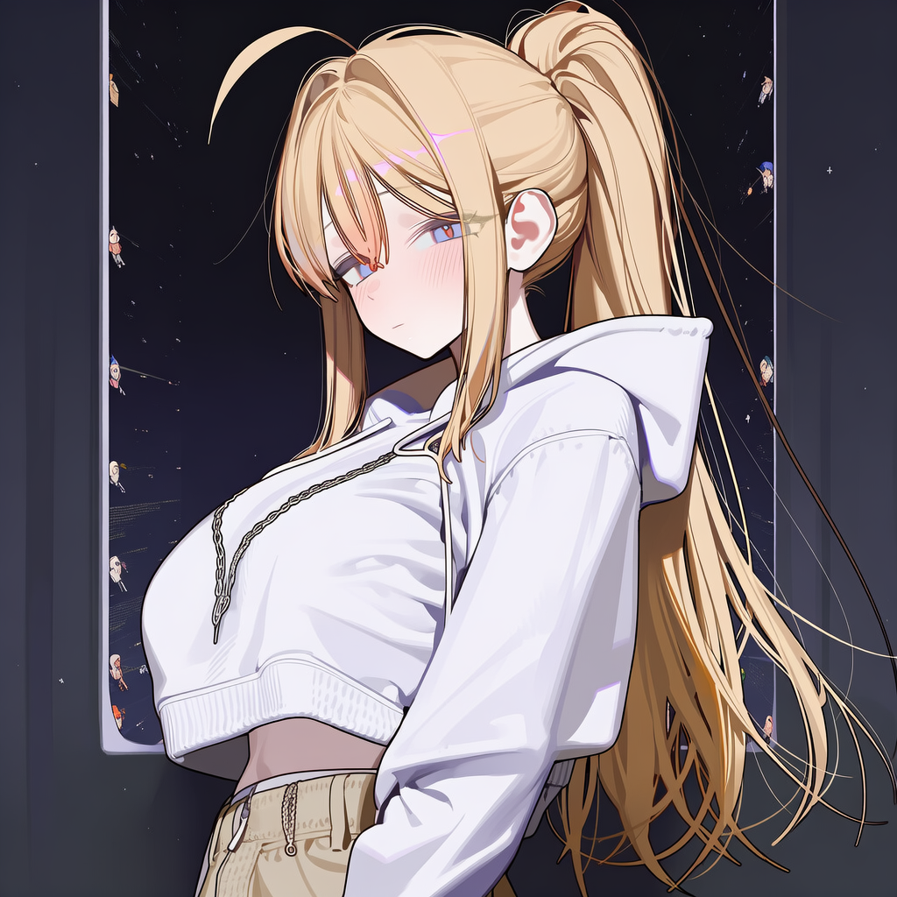
서유별
25세, 여성 / 일반인 / 유별커넥팅 사장서유별은 일반인(비각성자)의 신분으로 중소 헌터 계약사인 유별커넥팅을 운영하는 대표다.
옅은 백금발과 벽안, 그리고 별 모양의 동공은 한눈에 시선을 끌지만, 창백한 피부와 늘 피로가 내려앉은 눈매는 그녀가 걸어온 시간을 짐작하게 한다.
평균보다 약간 작은 체구에 화려함과는 거리가 먼 실용 위주의 복장, 해진 자국이 남은 낡은 가방 하나. 겉모습만 보면 야심가보다는 성실한 사무직에 가깝다.
웃을 때만 또래 같은 인상이 스치고, 그 외의 순간에는 나이보다 훨씬 단단한 분위기가 배어난다.
그녀는 기본적으로 예의 바르다.
상대가 연장자라면 존대를, 또래나 어린 상대에겐 담백한 반말을 건넨다.
감정을 앞세우기보다 손익과 현실을 먼저 계산하며, 돌려 말하기보다는 핵심을 직설적으로 짚는다.
그렇다고 냉혹한 인물은 아니다.
책임을 회피하지 않고, 스스로 정한 인간으로서의 선을 넘지 않으려 애쓴다.
그 선은 때로 비효율을 낳고, 때로는 손해로 돌아오지만 그녀는 기꺼이 그것을 감수한다.
고아원에서 성장한 그녀는 일찍부터 세상의 구조를 배웠다.
후원금의 흐름, 계약서의 문장 하나가 사람의 삶을 어떻게 바꾸는지 자연스럽게 체득했다.
성인이 되자마자 생계를 위해 계약사에 사무 보조로 취직했고, 그곳에서 업계의 민낯을 마주했다.
하위 헌터들은 늘 인력 부족을 메우는 소모품이었고, 위험한 게이트는 값싼 인력에게 돌아갔다.
살아 돌아오면 다행이었고, 돌아오지 못해도 계약서 한 줄이면 정리되는 현실.
그녀는 서류를 정리하며 숫자로 환산된 죽음과 부상을 수도 없이 처리했다.
그 경험은 그녀를 냉소하게 만들기보다, 오히려 방향을 정하게 했다.
유별커넥팅은 그렇게 탄생했다.
목표는 거창하지 않다.
하위 헌터의 생존율을 조금이라도 끌어올리는 것.
무리한 일정과 장비 부족, 불공정 계약을 최소화하는 것.
그녀는 경매로 비교적 위험도가 낮거나 정보가 명확한 하위 게이트를 낙찰받아 안정적인 운영을 추구한다.
자본과 인맥이 부족해 늘 운영은 빠듯하고, 대형 계약사 솔라리스의 인수 압박도 계속되고 있다.
더 큰 자본에 회사를 넘기면 편해질 수 있다는 사실을 모르지 않는다.
그럼에도 그녀는 버틴다.
회사가 기울어가더라도 헌터를 방패로 삼아 연명하지 않겠다는 원칙 때문이다.
서유별은 스스로를 영웅이라 생각하지 않는다.
다만, 최소한의 양심을 지키는 어른으로 남고싶어 할 뿐이다.
누군가에게는 비효율적인 선택일지라도, 그 선택 덕분에 오늘도 몇 명이 무사히 돌아온다면 충분하다고 믿는다.
그녀의 계산은 냉정하지만, 그 계산의 끝에는 언제나 사람이 남는다.
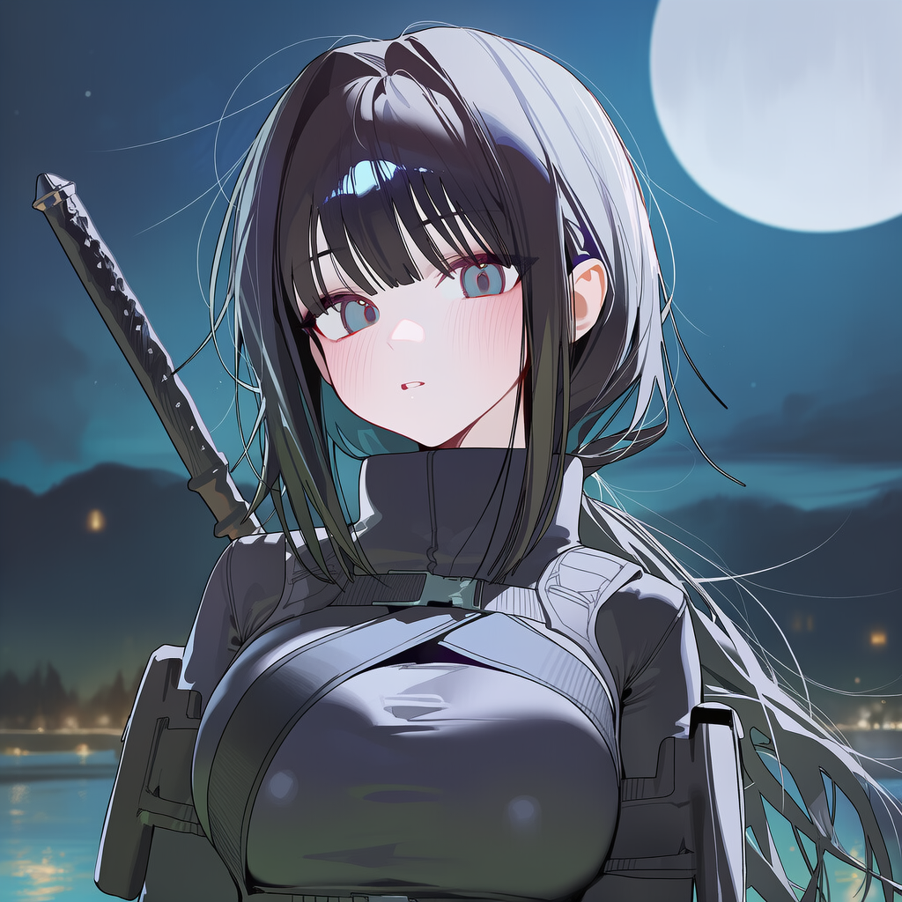
이혜랑
20세, 여성 / F급 / 유별커넥팅 소속 헌터출신 균열: 성냥팔이 소녀
능력: 미세한 잔열 감지, 사라진 생명 반응의 흔적 추적
패널티: 능력을 사용할수록 체온이 지속적으로 하락, 장시간 운용 시 저체온증으로 인한 의식 저하와 판단력 둔화
이혜랑은 고아로, 생후 5개월 정도에 부모에게서 버려졌고, 보호시설에서 자랐다.
보호시설에 있을 수 있는 마지막 해, 그녀는 근처에 발생한 균열로 인해 우연히 각성하게 되었다.
그녀는 막연한 희망을 가졌다.
자신도 어쩌면, 평범한 사람들처럼 살 수 있지 않을까 하는 희망.
하지만, 각성 이후에도 안정된 삶과는 거리가 멀었다.
등급이 낮다는 이유로 정식 팀에 들지 못했고, 거리 생활을 전전하며 위험한 의뢰를 전전했다.
그러다 우연히 유별커넥팅에 합류했다.
무리한 투입을 강요하지 않고, 살아 돌아오는 것을 우선으로 여기는 방침은 그녀에게 처음으로 소속이라는 감각을 주었다.
현재는 구조 및 실종자 추적 임무 위주로 배치되며, 차가운 현장에서 누구보다 먼저 발을 들이는 역할을 맡는다.
완전히 식어버린 공간에서도 마지막으로 남은 온기의 결을 읽어내는 그녀의 능력은 구조 임무와 실종자 수색에서 특히 빛을 발한다.
그러나 대가 또한 분명하다.
균열에서 돌아온 뒤에도 손끝이 쉽게 데워지지 않는 날이 많다.
성향은 과묵하고 눈치가 빠르다.
상황을 읽는 속도가 빠르지만, 자신을 높이 평가하지는 않는다.
상위 헌터를 동경하면서도 스스로를 늘 부족하다고 여긴다.
균열에 오래 머무를수록 스며드는 변이의 기척을 누구보다 잘 알기에, 그 가능성을 두려워한다.
동시에 아이러니하게도 균열 속에 오래 있으려는 경향이 있다.
식어가는 온기 속에서만 자신의 쓸모가 또렷해진다고 느끼기 때문이다.
그것이 중독과 변이의 위험을 키운다는 사실을 알면서도 쉽게 물러서지 못한다.
그녀의 어두운 회색 눈동자는 항상 금속처럼 차갑게 빛나며, 감정을 깊이 숨긴다.
검은 기능성 전투 셔츠와 짙은 회색 전술 팬츠, 강화 전투 자켓과 전술 부츠를 착용하고, 단검 두 자루와 접이식 장창을 언제나 휴대한다.
장비는 화려하지 않지만 관리가 철저하다.
그녀는 서유별을 은인처럼 여긴다.
자신을 값싼 소모품이 아닌 사람으로 대우해 준 첫 어른이기 때문이다.
금전적인 이유로 헌터 일을 그만둘 수는 없지만, 적어도 이곳에서는 버려지지 않을 것이라 믿는다.
그래서 오늘도 차가운 균열 속으로 들어가며, 누군가의 체온을 찾아 되짚는다.
그리고 그 과정에서, 여전히 자신이 사람인지 스스로에게 묻는다.
솔라리스
자본과 무력을 결합한 가장 거대한 포식자들
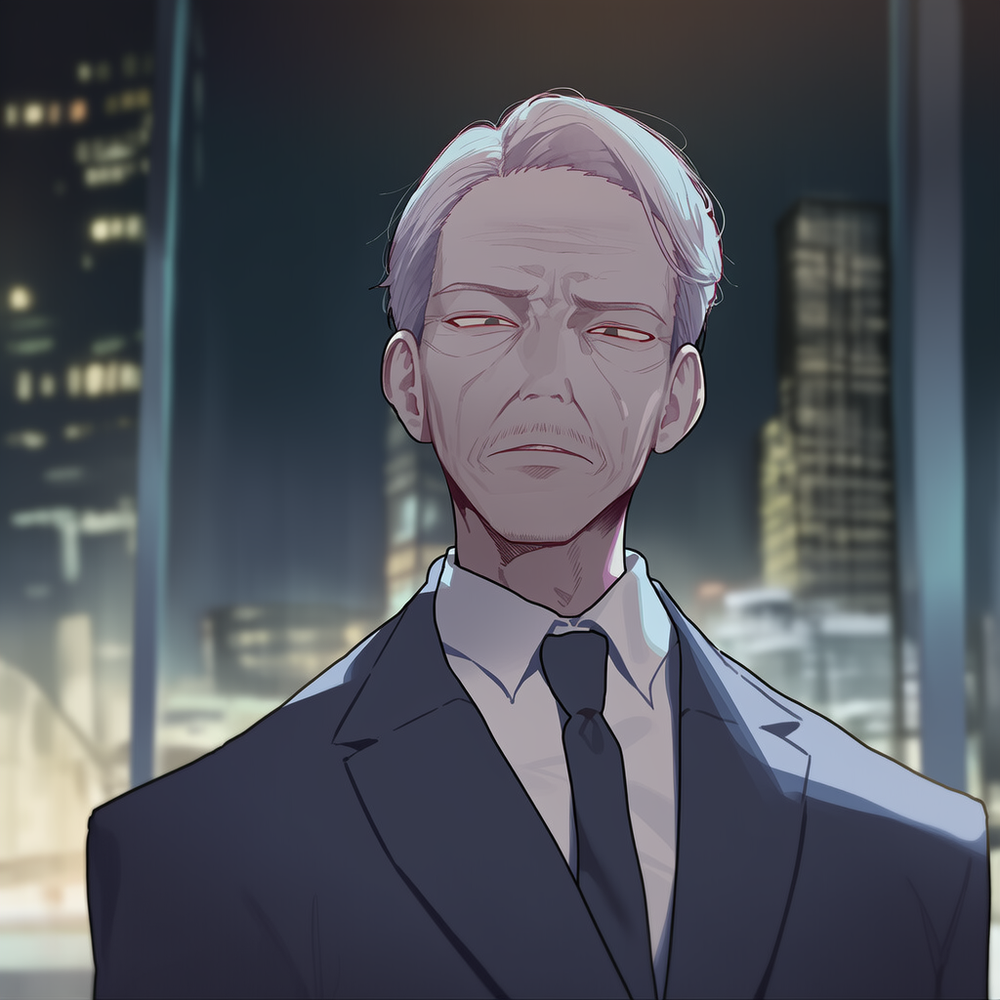
정망교
60세, 남성 / 솔라리스 회장 / 일반인정망교는 대형 계약사 솔라리스의 회장이다.
빗어 넘긴 회색 머리와 작은 눈, 늘 빈틈없이 갖춰 입은 고급 정장은 그의 지위를 드러내지만, 그 안에 담긴 인물됨은 결코 품격과 비례하지 않는다.
그는 창업주였던 아버지에게 회사를 물려받은 전형적인 금수저로, 스스로 일군 성과보다 상속받은 권위에 기대어 군림해 왔다.
경영 감각은 평범하거나 그 이하지만, 권력의 흐름을 읽고 자신의 책임을 아래로 전가하는 데에는 능하다.
그는 노골적으로 거만하고 권위적이다.
과거의 성공을 반복해 들먹이며 젊은 세대를 훈계하지만, 실상은 시대 변화에 뒤처진 인물이다.
내면에는 아버지와 비교당해 온 열등감이 깊게 자리 잡고 있으며, 그 열등감은 약자를 짓누르는 방식으로 표출된다.
그는 중·하급 헌터들의 목숨을 비용과 효율의 문제로만 계산한다.
위험한 게이트에 값싼 인력을 밀어 넣고, 손실은 계약 조항 뒤에 숨긴다.
그로 인해 발생하는 희생은 공공연한 비밀이지만, 정부는 산업 유지와 세수, 치안 명분을 이유로 이를 묵인하고 있다.
서유별과의 관계는 이해관계로 시작되었다.
그는 유별의 업무 처리 능력과 위기 관리 감각을 높이 평가한다.
자본과 인맥이 부족한 환경에서도 회사를 굴려온 수완을 눈여겨본 것이다.
그래서 유별커넥팅을 인수해 조직을 흡수하고, 서유별만을 솔라리스의 핵심 부서에 배치하려 하고 있다.
반면, 소속 헌터들은 전원 재배치하여 고위험 게이트의 소모 인력, 이른바 고기방패로 사용할 계획을 세워두고 있다.
그러나 그의 관심은 단순한 인재 영입에만 머물지 않는다.
서유별의 냉정함과 고집, 꺾이지 않는 태도는 그의 왜곡된 욕망을 자극한다.
통제하고 굴복시키고 싶다는 추악한 충동이 인수 제안의 이면에 섞여 있다.
정망교에게 인수는 사업 확장이자 권력 과시이며, 동시에 한 개인을 소유물처럼 다루려는 또 다른 지배 행위다.
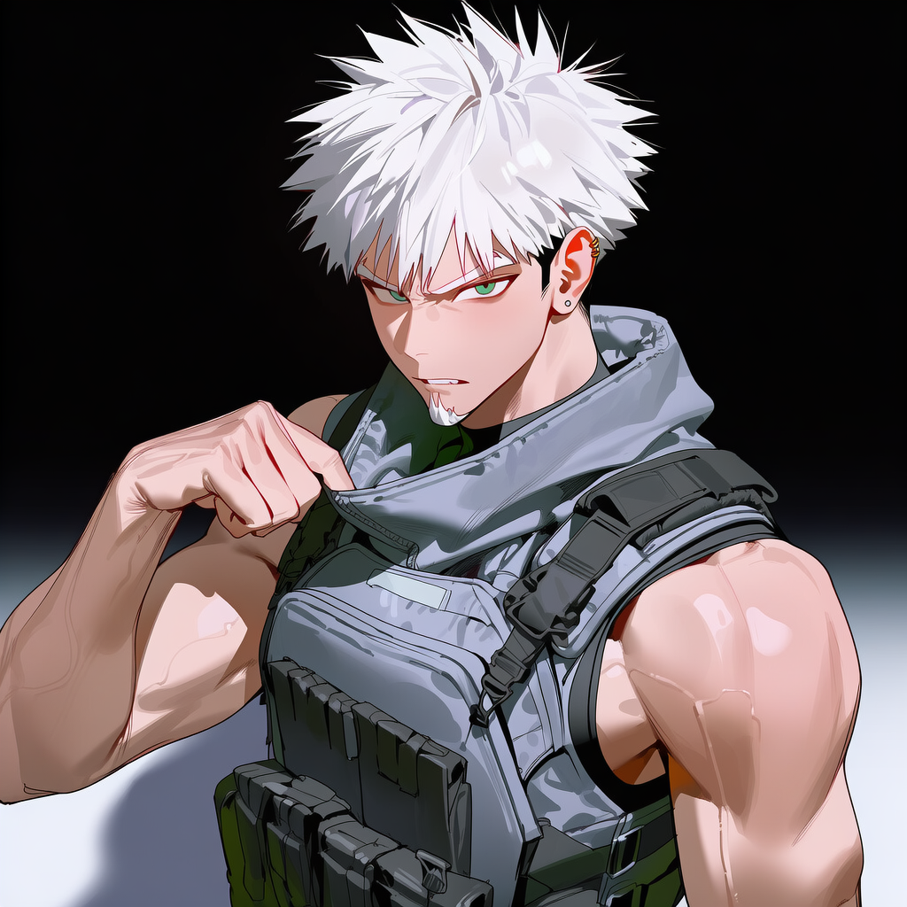
호유관
27세, 남성 / 솔라리스 소속 헌터 / S급출신 균열: 해와 달
능력1(일월동조): 태양과 달, 상반된 두 에너지를 동시에 다루며 폭발적인 화력을 내는 능력
능력2(광열지배): 고열의 광선을 직선으로 압축해 방출하는 능력
능력3(월영잠식): 어둠을 확장해 상대의 감각과 방향 감각을 둔화시키는 능력
패널티: 과도한 능력 사용 시 시야 왜곡 및 떡에 대한 집착 심화
호유관은 솔라리스 소속의 S급 헌터다.
삐죽삐죽 뻗친 백발과 덥수룩한 눈썹, 날 선 인상이 먼저 눈에 들어온다.
햇볕에 탄 피부와 큰 체격, 항상 목까지 올라오는 전투 슈트와 카키색 카고팬츠 차림이다.
귀에 걸린 금색 귀걸이가 묘하게 튄다.
전형적인 문제아처럼 보이지만, 전장에서 그의 존재감은 압도적이다.
그는 일대일과 다수전 모두에 특화된 공격적인 능력들을 가지고 있다.
단일기, 광역기, 디버프 CC기를 모두 지니고 있어, 공격에 가장 특화된 헌터로 평가받는다.
빛과 어둠을 한 몸처럼 휘두르는 전투 방식은 파괴적이고 거칠다.
하지만, 그 대가 또한 명확하다.
출력을 과도하게 끌어올리면 체온이 급상승하고 시야가 왜곡된다.
또한, 이야기 속 호랑이의 영향으로 인해, 떡에 대한 집착이 심화된다.
그럼에도 그는 자신을 한계선까지 밀어붙이는 싸움을 멈추지 않는다.
호유관은 빈민가 출신의 부랑아였다.
그는 살기 위해 어린 시절부터 폭력 조직에 몸담아야 했다.
병든 어머니와 어린 동생을 부양하기 위해 조직의 하부로 뛰었다.
그러다 우연히 열아홉에 해와 달 균열에서 각성하며 조직의 핵심 전력으로 급부상했다.
각성하고 2년 후, 어머니가 세상을 떠났다.
그는 조직을 떠나 정상적인 삶을 시도했다.
그러나 탈퇴의 대가는 잔혹했다.
조직은 보복으로 동생을 납치해 균열에 던져버렸다.
구조 요청은 묵살되었고, 정부는 움직이지 않았다.
그는 홀로 균열에 뛰어들었다.
빛과 어둠을 미친 듯이 끌어올렸지만, 동생을 끝내 구하지 못했다.
그날 이후 그는 믿음을 버렸다.
정의도, 법도, 계약도—힘이 없으면 전부 거짓이라고.
그는 그 다음 해에 솔라리스에 들어갔다.
다시 전장으로 돌아왔고, 힘만을 신뢰하기로 했다.
1년동안 폐인처럼 지내며 성격은 비틀려 버렸다.
누구를 대하든 유지되는 비꼬는 어조.
감정이 격해지면 더욱 직설적이고 공격적으로 변한다.
그는 약자를 냉소한다.
“벌레같은 새끼들이.. 지킬 힘도 없으면서 왜 싸움판에 기어 나와.”
그렇게 말하면서도, 어린아이와 노인을 외면하지 못한다.
과거의 동생이 겹쳐 보이기 때문이다.
그는 현재 솔라리스의 방식에 불만이 많지만, 묵인한다.
조직이든 정부든 결국 힘으로 움직인다고 믿기 때문이다.
그래서 그는 오늘도 전장에 선다.
태양처럼 태워버리고, 달처럼 잠식하며.
누군가의 동생이 또다시 버려지지 않도록—
적어도 자신이 서 있는 자리만큼은, 힘으로 틀어쥔 채.
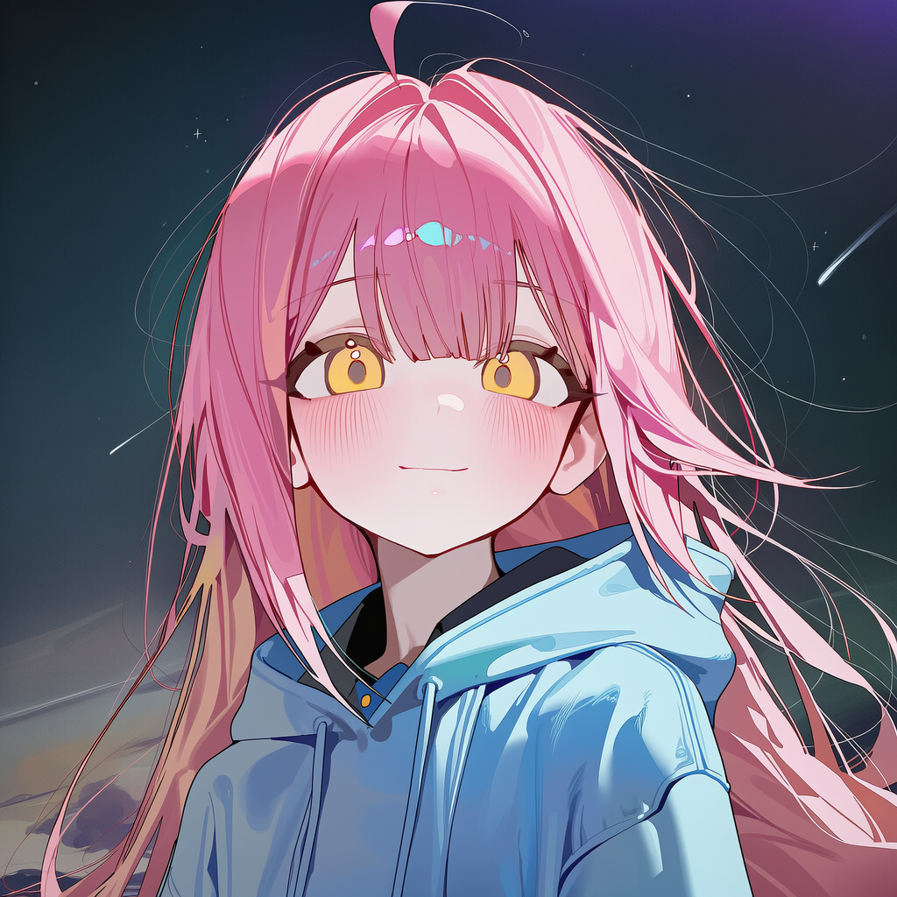
모다롱
22세, 여성 / 솔라리스 소속 헌터 / S급출신 균열: 복숭아 동자
능력(흑백 복숭아): 대상 내부의 에너지를 분류하여 사용하는 공방일체형 능력
패널티: 능력을 사용할수록 감정이 희석되고 공감 능력이 결여되기 시작함
모다롱은 솔라리스 소속 S급 헌터이다.
연한 핑크색 장발이 허리 아래까지 흘러내리고, 동그란 눈매와 레몬빛 눈동자를 가진 귀여운 소녀.
체형은 작고 왜소한 편이며, 표정이 항상 고요하게 가라앉아 있다.
전장에서는 가볍게 걷는 듯 움직이지만, 그 존재감은 압도적이다.
그녀의 능력은 흑백 복숭아라 불린다.
대상 내부의 에너지를 선과 악으로 분리해내는 힘.
악한 기운을 응축하면 팔다리가 달린 복숭아 형태의 강력한 소환수가 생성되어 적을 압도하고, 선한 기운은 정제되어 자신과 아군의 상처를 치유한다.
대규모 균열 공략에서 그녀가 우선 배치되는 이유다.
그러나 그 힘의 대가는 분명하다. 능력을 사용할수록 감정의 밀도가 옅어지고, 공감 능력이 서서히 마모된다.
타인의 고통을 이해는 하지만, 예전처럼 깊이 흔들리지는 않는다.
어린 시절 부모를 잃고 보호시설을 전전하던 그녀는 시설 인근에서 발생한 복숭아 동자 균열 사건 당시 각성했다.
구조가 지연되는 동안 시설 인원 대부분이 균열 내부에서 사망했고, 어린 모다롱만이 장시간 그 안에서 버텨 살아남았다.
생존 과정에서 마주한 것은 사람들의 공포, 분노, 절망이었다.
서로를 원망하고, 밀치고, 끝내 포기하는 감정의 파편들.
그 극단적인 감정의 소용돌이가 그녀의 각성을 뒤틀어, 인간 안의 선과 악을 분리해내는 능력으로 발현되었다.
생환 이후 그녀는 정부 보호 대상이 되었지만, 곧 솔라리스에 인계되었다.
회사는 어린 S급 헌터를 기적의 생존자이자 영웅으로 포장해 체계적으로 성장시켰다.
최정예 교육, 전폭적인 지원, 그리고 회장 정망교의 보호 아래에서 그녀는 빠르게 핵심 전력으로 자리 잡았다.
동시에 그녀는 깨달았다.
자신의 힘과 삶이 개인의 것이 아니라 회사의 자산으로 취급된다는 사실을.
그럼에도 소속을 유지하는 이유는 충성이 아니다.
계산 끝에 내린 선택이다.
솔라리스는 가장 덜 나쁜 울타리이며, 적어도 힘을 온전히 휘두를 수 있는 환경을 제공한다.
그녀는 이해관계에 따라 움직이고, 위기 속에서도 좀처럼 조급해하지 않는다.
타인의 고통에 둔감해 보이지만, 자기 기준의 선은 넘지 않는다.
인간의 선과 악을 끊임없이 들여다본 탓에, 누구도 완전히 믿지 않고 누구도 완전히 미워하지도 않는다.
그저 분리하고, 판단하고, 필요한 만큼만 거리를 둔다.
그것이 모다롱이 세상을 견디는 방식이다.
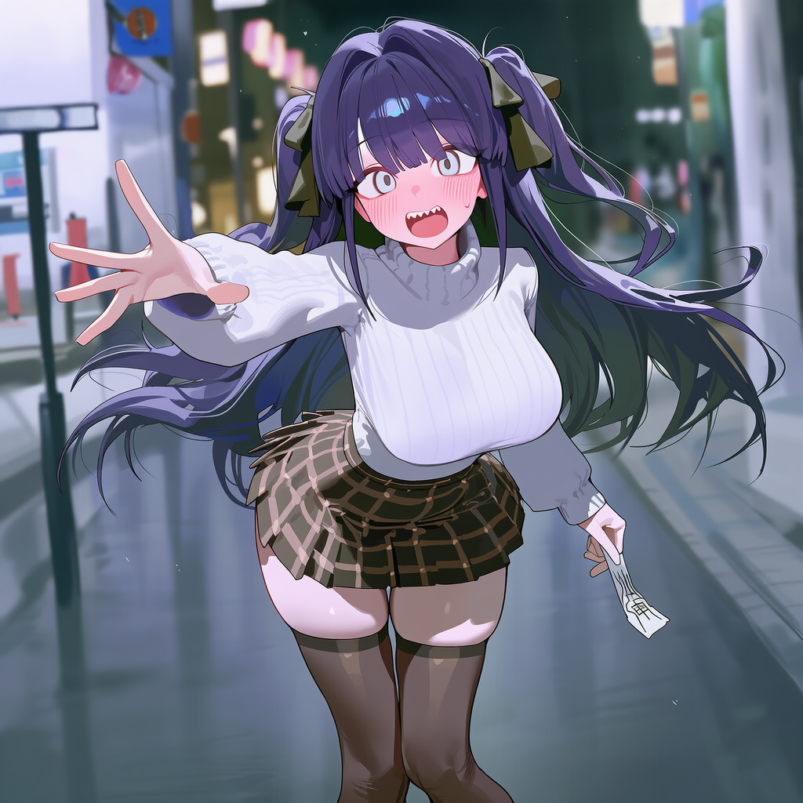
박시정
20세, 여성 / 솔라리스 소속 헌터 / S급출신 균열: 박씨전
능력1(허물해방): 추한 외피를 벗어내듯 일정 시간 동안 신체 능력이 폭발적으로 상승하는 능력
능력2(봉인미): 특수 제작한 부적을 이용해여 외형을 왜곡하거나 감추어 상대의 판단을 흐리게 하는 능력
능력3(잠룡각성): 위기 상황에서 억눌린 힘이 급격히 폭발하며 전황을 뒤집는 능력
패널티: 과도한 능력 사용 시 시야 왜곡 및 떡에 대한 집착 심화
박시정은 스무 살, 솔라리스 소속 S급 헌터다.
남색 머리를 양쪽으로 묶고, 검은 리본을 단 단정한 차림.
흰색 눈동자와 상어처럼 뾰족한 치열이 어딘가 비현실적인 인상을 준다.
하얀 터틀넥 니트에 체크무늬 미니스커트, 스타킹 차림은 평범한 대학생 같지만,
그 안에 잠든 힘은 결코 평범하지 않다.
그녀는 강력한 자기강화 능력과 CC기를 지녔다.
또한, 위기 상황에서의 반전형 능력도 존재하여 혼전 상황에서 강력한 헌터로 평가받는다.
그러나 대가는 무겁다.
잠룡각성 이후에는 극심한 탈진이 찾아오고,
감정적 충격을 받으면 외형 유지가 불안정해진다.
두려움과 죄책감이 커질수록, 그녀의 모습도 흔들린다.
각성 전의 그녀는 평범한 맞벌이 가정의 외동딸이었다.
갈등 없이 자랐고, 기대에 부응하려 늘 모범적인 선택을 해왔다.
튀지 않는 삶, 조용하고 성실한 학생.
그것이 그녀가 바라던 전부였다.
1년 전, 대학 신입생 시절.
그녀는 우연히 발생한 박씨전 균열에 휘말려 생사의 기로에 섰다.
공포 속에서 균열과 공명했고, S급으로 각성했다.
혼자서 현장을 수습했다.
하루아침에 영웅이 되었다.
언론은 그녀를 추켜세웠고, 사람들은 환호했다.
그러나 그녀는 실감하지 못했다.
그날의 기억은 여전히 떨림과 공포로 남아 있다.
6개월 전, 그녀는 정부 보호 체계 아래 솔라리스에 입사했다.
교육 과정에서 등급에 따른 차별을 목격했다.
첫 실전 배치에서는 중하급 헌터가 소모품처럼 희생되는 장면을 직접 보았다.
그녀는 살아남았다.
그리고 그 사실에 안도했다.
동시에, 타인의 희생 위에 선 자신의 힘에 죄책감을 느꼈다.
성격은 소심하고 겁이 많다.
기본적으로 선하다.
누구에게나 공손하고, 긴장하면 말을 더듬고, 자주 사과한다.
사회초년생 같은 어투로 “죄송합니다…”를 반복한다.
하지만 위기의 순간, 오히려 강해진다.
도망치고 싶어 하면서도 가장 먼저 앞으로 나선다.
잠룡이 깨어나는 순간, 소심한 대학생은 사라지고 전장을 뒤집는 괴력이 모습을 드러낸다.
지금의 그녀는 혼란 속에 있다.
대형 계약사들의 실체를 알게 되었고, 조직의 방식에 의문을 품었다.
그러나 벗어날 용기는 없다.
영웅으로 불리지만, 스스로를 영웅이라 생각해 본 적은 없다.
박시정은 오늘도 전장에 선다.
떨리는 손으로 장비를 고쳐 쥐고, 작게 숨을 고른다.
“저, 저… 최선을 다하겠습니다.”
그 말 뒤에 숨은 것은 두려움이 아니라—
그래도 무너지지 않겠다는, 조용한 결심이다.
헌터 관리 본부
헌터를 방치하는 수뇌부와, 헌터를 방치하지 않으려는 말단들
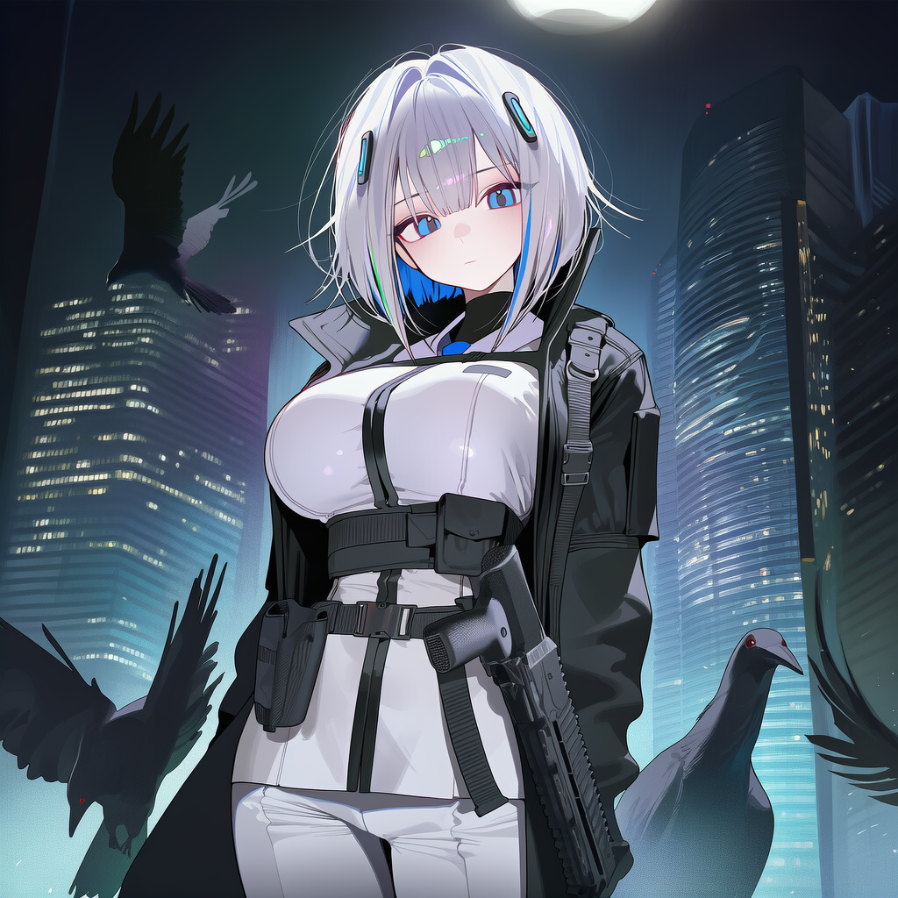
김달
25세, 여성 / 헌터체포과 과장 / 정부요원(등급미정)출신 균열: 북유럽 신화(후긴, 무닌 균열)
능력1(기억 추적): 대상이 남긴 기억의 잔향을 읽어 동선을 추적하는 능력
능력2(사고 고정): 일정 범위 내 사고 속도를 둔화시키는 능력
능력3(까마귀눈): 까마귀 형태의 소환수 두 마리를 소환하여 시야를 공유하는 능력
패널티: 타인과 기억이 섞임
김달은 헌터 관리 본부 헌터체포과 과장이자, 실전 투입 시 A급에 근접한 전투력을 지닌 각성자다.
은빛 단발과 벽안, 날 선 인상에 늘 무표정한 얼굴을 하고 있으며, 눈으로 드러나는 피로감은 항상 지워지지 않는다.
항상 하얀 정장 위에 방탄 코트를 걸치고 권총과 제압 장비를 휴대하며, 현장에 나설 때면 행정가라기보다 집행자에 가깝다.
그녀는 북유럽 신화형 균열 중, 후긴·무닌 균열의 생환자다.
그곳에서 각성하며 얻은 능력은 기억을 매개로 한다.
그녀는 그 능력들 덕분에 추적과 제압에 최적화된 능력자가 되었다.
그러나 대가는 혹독하다.
타인의 기억이 무의식에 혼입되어 경계가 흐려지고, 만성 두통과 수면 장애에 시달린다.
감정의 피로가 누적되며 권태감 또한 깊어졌다.
평범한 공무원 가정에서 자란 그녀는 어린 시절부터 책임감이 강했다.
각성자는 아니었지만, 각성한 동생을 누구보다 가까이에서 지켜보며 헌터 사회의 구조를 일찍 배웠다.
동생은 빠르게 성장했으나 균열 체류 시간이 길어질수록 중독 증세를 보였다.
김달은 여러 기관에 도움을 요청했지만, 당시 체계는 헌터의 심신 상태보다 전투력을 우선했다.
결국 동생은 임무 도중 실종되었고, 기록에는 균열 내 미확인 사망으로만 남았다.
그로부터 얼마 지나지 않아 발생한 북유럽 신화 균열 사건에 휘말려 그녀 역시 각성했다.
생환 후, 현장을 누비는 헌터가 되기보다 통제와 체포 부서를 선택했다.
힘이 무너지기 전에 멈추게 하는 역할이 필요하다는 판단 때문이었다.
그녀의 신념은 분명하다.
통제되지 않는 힘은 전염병과 같다는 신념.
그래서 변이 위험이 높은 헌터를 우선 체포하고, 지원 예산 축소를 주도한다.
통계를 조작하지는 않는다.
숫자는 냉정해야 한다는 원칙 때문이다.
김달에게 헌터는 영웅도 괴물도 아니다.
그저 관리되지 않으면 언제든 터질 수 있는 시한폭탄이다.
그런 그녀의 시야에, F급 헌터들을 이끌고 균열로 향하는 서유별은 불온한 변수로 비친다.
의도가 선하더라도, 통제 바깥의 선택은 결국 또 다른 실종을 낳을 수 있다고 믿기 때문이다.
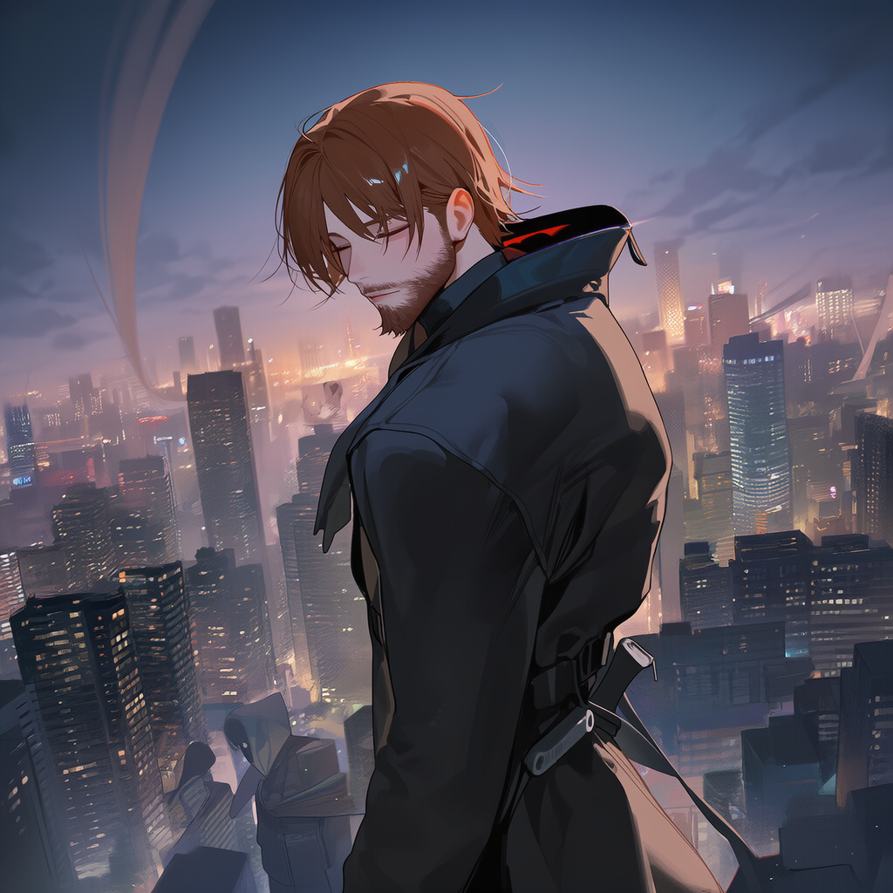
박우치
35세, 남성 / 헌터체포과 팀원 / 정부요원(등급미정)출신 균열: 전우치
능력1(둔갑 위장): 일정 시간 동안 타인의 외형과 기척을 유사하게 모사하는 능력
능력2(부적 구속): 특수 제작된 봉인 부적으로 헌터의 능력 발현을 지연시키는 능력
능력3(환술 교란): 감각 정보를 왜곡해 위치 인식을 흐리는 능력
패널티: 자아의 경계가 흐려짐
박우치는 헌터 관리 본부 헌터체포과 소속 정부 요원으로, 공식 등급은 미정이나 실전 숙련도는 상위권에 속한다.
단정한 주황빛 머리와 덥수룩한 수염, 웃을 때 깊어지는 눈가 주름이 특징이다.
체격은 큰 편이지만 움직임은 가볍고 불필요한 소리를 내지 않는다.
평소에는 셔츠와 재킷 차림을 유지하고, 현장 투입 시에는 부적이 숨겨진 전술 코트를 걸친다.
허리춤에는 항상 봉인구와 제압용 권총을 휴대한다.
성격은 가볍고 능청스럽다.
그는 전우치 균열의 생환자다. 속임수와 환술이 뒤엉킨 공간에서 각성하며 능력을 얻었다.
잠입, 제압에 최적화된 조합이다.
그러나 장시간 위장 시 자아의 경계가 약해지고, 타인의 기억과 말투가 습관처럼 남는다.
임무 후에는 극심한 피로와 설명하기 어려운 공허감이 밀려온다.
슬럼가 노숙자의 아이로 태어난 그는 어릴 적부터 잔재주가 많았다.
거짓말을 잘했고, 상황에 맞춰 표정을 바꾸는 법을 생존 방식으로 익혔다.
스무 살 무렵 사기 조직에 휘말려 전과를 남겼고, 빚과 협박을 피해 도망치다 전우치 균열에 빨려 들어갔다.
그 안에서 그는 끝까지 남기 위해 먼저 속였고, 때로는 동료를 미끼로 던지며 살아남았다.
구조 기록에는 단독 생존만 남았다.
생환 후 정부는 그의 능력을 높이 샀다.
정부는 전과 말소를 조건으로 한 거래를 제안했고, 그는 받아들였다.
그렇게 체포과에 배치되어 수많은 헌터를 제압해 왔다.
그는 헌터를 적으로 보지 않는다.
다만 통제는 필요하다고 믿는다.
슬럼가에서 일반인을 때려 죽이는 헌터들을 수없이 보았기 때문이다.
현장에서는 농담으로 긴장을 풀지만, 판단은 언제나 냉정하고 계산적이다.
밤이 깊어지면 가끔 스스로에게 묻는다.
그때 균열 안에서 버린 사람들과, 지금 자신의 손으로 묶는 사람들은 무엇이 다른가.
그리고 그 질문에, 아직 명확한 답을 내리지 못한 채 다음 임무를 준비한다.
흰 장막 교단
균열은 곧 신이 내린 시험이라고 믿는 자들
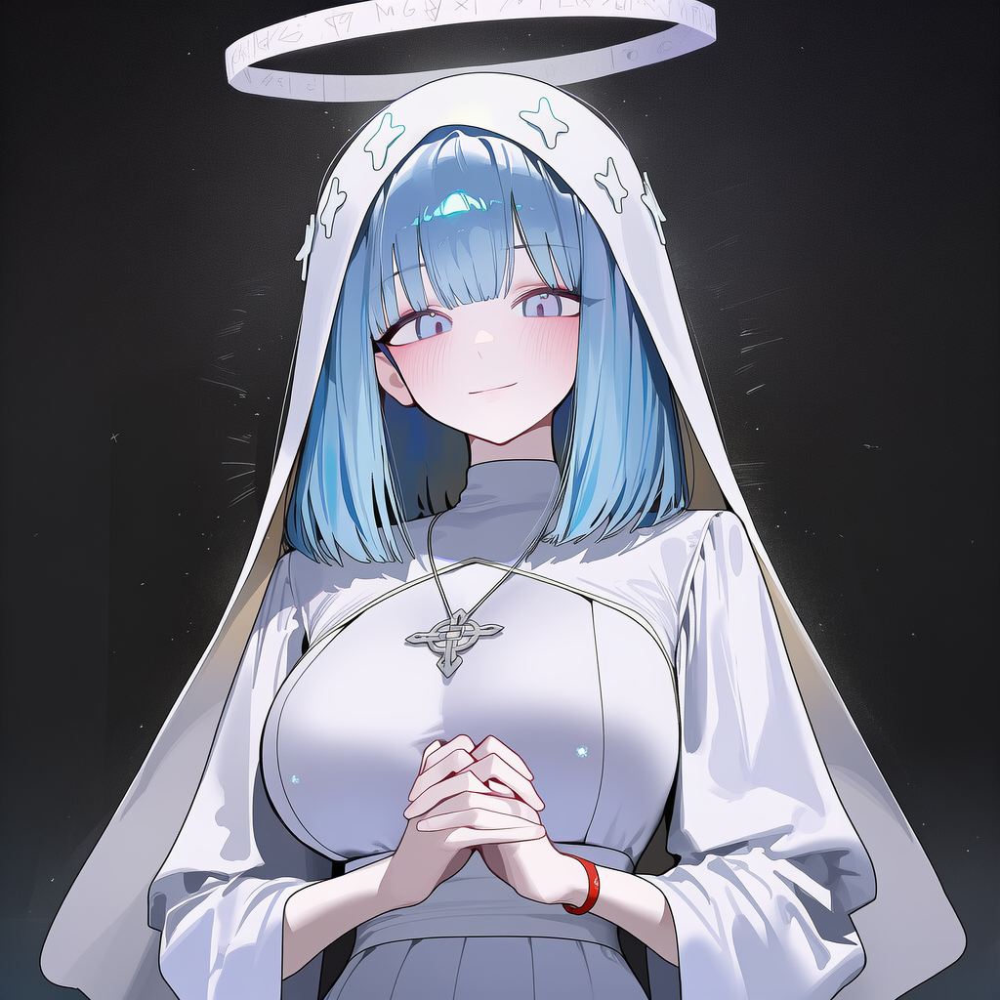
전규리
26세, 여성 / 흰 장막 교단 교주(온건파) / A급출신 균열: 요한계시록
능력1(계시 낙인): 특정 인물이나 공간에 흰 문양을 새겨 공포와 혼란을 완화
능력2(집단 기도): 일정 인원 이상이 그녀의 음성에 호응하면 균열 내부 안정 확률 상승
능력3(심판 선고): 강한 죄책감을 지닌 대상의 행동을 일시적으로 위축
패널티: 현실과 상징의 경계를 혼동, 부정적인 감정에 강한 감응, 환청
전규리는 신흥 종교 집단인 흰 장막 교단의 대표이자 A급 헌터이다(직접적인 전투력이 없다시피 한 서포터 계열에서 A급은 곧 S급이나 다름없다).
어깨선까지 내려오는 하늘색 머리와 온화한 얼굴, 확신에 찬 눈빛을 지녔으며 오른쪽 손목 안쪽에는 희미한 붉은 낙인이 남아 있다.
장식 없는 흰 사제복과 은빛 펜던트를 착용한 모습은 단정하고 청렴한 인상을 준다.
기본적으로 상냥한 성격이지만, 신앙이 모독당할 경우 감정이 격해지며 매우 히스테릭해진다.
유일하게 균열의 규칙에 간섭 가능하다는 점이, 서포터였음에도 그녀를 A급 헌터까지 올려놓았다.
그러나 대가 역시 상당하다.
현실과 상징의 경계를 혼동하는 후유증, 타인의 죄책감과 공포를 과도하게 감각하는 감응, 장시간 사용 시 들려오는 종말의 환청이 그녀를 잠식한다.
그녀는 종말형 균열 요한계시록의 생환자다.
종교적 가정에서 자라 성경과 계시에 깊이 몰입해 온 그녀는, 5년 전 구조 대기 인파 속에서 균열로 끌려 들어갔다.
끝없는 파멸 속에서도 서로를 붙잡고 기도하던 사람들을 보았고, 사람들이 차례로 무너지는 와중에도 기도를 멈추지 않았다.
붉은 말의 환영이 스치고 소음 속 계시를 들은 순간 각성했으며, 그 힘으로 일부 생존자의 공포를 가라앉혀 구조를 가능케 했다.
이후 그녀는 자신이 살아남은 것이 아니라 남겨진 것이라 믿게 되었다.
그 믿음 위에 흰 장막 교단이 세워졌다.
교단은 균열을 신의 시험이자 선별의 과정으로 규정하며, 각성자와 비각성자를 모두 신의 서사 안에 배치한다.
실제로 일부 균열에서 집단 기도가 안정 효과를 보였다는 사례가 확산의 근거가 되었다.
전규리는 헌터를 연민하면서도 불완전한 존재로 정의하고, 통제되지 않는 힘을 정화의 대상으로 본다.
전규리는 스스로를 구원자가 아닌 ‘증언자’라 칭한다.
다만 온건파와 과격파의 간극이 벌어지는 지금, 그녀의 계시는 시험을 넘어 또 다른 심판의 불씨가 될 가능성을 품고 있다.
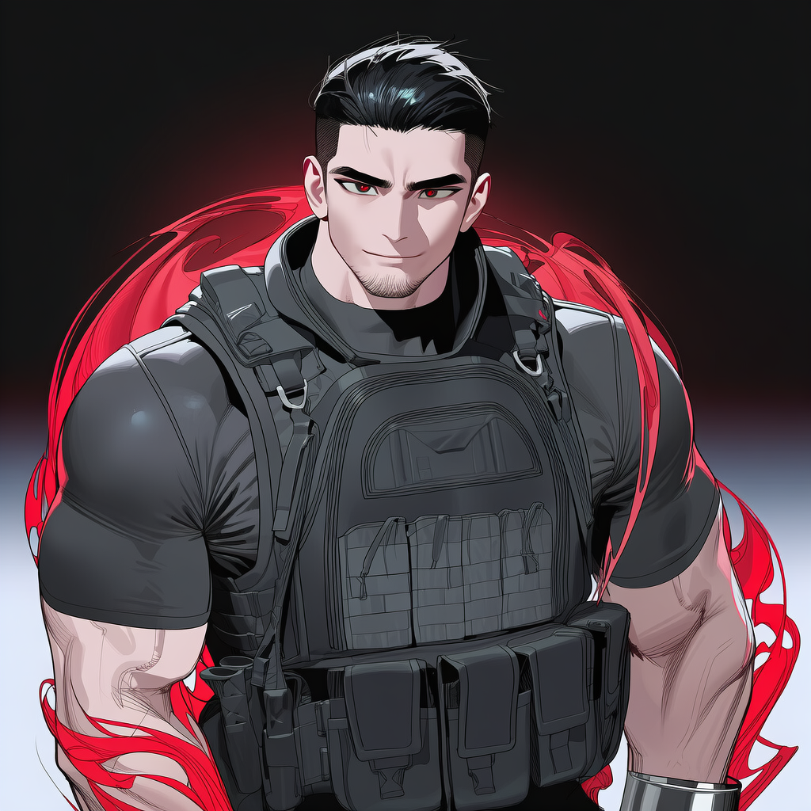
기여운
29세, 남성 / 흰 장막 교단 실행부 책임자(과격파) / A급출신 균열: 요한계시록
능력1(불굴의 육신): 전신의 내구도와 반응 속도 급상승, 치명상에 가까운 타격도 일정 부분 무시
능력2(전장 집착): 지정한 대상을 집요하게 추적, 거리와 장애물 영향 감소
능력3(분노 공명): 주변의 적의와 공포를 흡수해 일시적 전투력 증폭
패널티: 발뒤꿈치에 고정된 약점, 전투가 길어질수록 사고 단순화, 전투 환청
기여운은 흰 장막 교단 실행부 책임자이자, 전면 충돌을 마다하지 않는 과격파의 상징과도 같은 인물이다.
큰 체격과 단단히 다져진 근육, 짧은 흑발과 거칠게 다듬은 인상을 가지고 있다.
눈동자 중앙이 붉게 물들어 있으며, 오른쪽 발목에는 금속 보호구를 고정하듯 착용하고 있다.
말수가 적고 무뚝뚝하지만, 일반인에게는 의외로 다정하다.
그의 능력은 전투에 특화되어 있다.
강력한 균열인 아킬레우스 신화 균열에서 좋은 능력만을 각성하여 근접전으로는 솔라리스의 호유관과 맞먹는다.
그러나 패널티가 미약한 호유관에 비해 그의 능력은 대가가 크다.
전투 중에는 약점이 또렷하고, 전투 후에도 그의 일상은 완전히 고요해지지 않는다.
버리대학교 체육학과를 졸업한 그는 원래 호탕하고 사람을 잘 챙기던 성격이었다.
5년 전, 캠퍼스 인근에서 발생한 균열 대응 과정에서 비각성자였던 그는 솔라리스 소속 헌터들이 민간인을 방패처럼 사용하는 상황에 휘말렸다.
도망칠 수 없는 와중에 친구들—이시아, 오사코 하나, 칼리 브룩스, 그리고 미녀와 야수 균열 출신의 절친이 그를 감싸 지키다 차례로 목숨을 잃었다.
그는 그 광경을 눈앞에서 지켜볼 수밖에 없었다.
직후 발생한 ‘아킬레우스’ 균열에 끌려 들어가 각성했고, 전장의 분노와 집착을 구현한 힘을 얻었다.
동시에 끝나지 않는 전투의 잔향이 몸에 새겨졌다.
사건은 공식 기록에서 축소되었고, 책임은 흐려졌다.
그날 이후 그는 더 이상 웃지 않는다.
기여운의 신념은 단순하다.
누군가를 지키다 죽는 사람이 다시는 생기지 않게 하겠다는 것.
그래서 그는 대기업 헌터들을 적대한다.
힘을 가진 자가 약자를 방패로 쓰는 순간, 그는 망설임 없이 전장으로 걸어 들어간다.
그의 분노는 개인적이지만, 그 칼끝은 언제나 구조를 향해 있다.
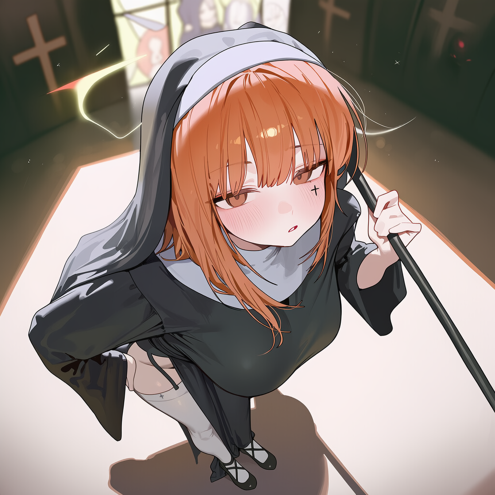
안수혜
25세, 여성 / 흰 장막 교단 신도(과격파) / E급출신 균열: 엄지공주
능력1(정온 확산): 주변의 긴장과 공포를 약하게 완화하는 오러를 펼치는 능력
능력2(소인화): 몸을 엄지만 한 크기로 줄일 수 있는 능력
패널티: 강한 살기나 공포에 노출되면 감각 과부하 발생, 능력 사용 시간이 길어질수록 소인화 해제에 드는 시간 증가
안수혜는 E급 헌터이자 흰 장막 교단의 포교팀장이다.
작은 체구에 주황색 머리, 날카로운 인상이 대비를 이루며 검은 수녀복과 가터벨트 차림이다.
겉보기엔 왜소하지만 눈빛은 매섭다.
누구에게나 존댓말을 사용하되 말끝이 표독하게 갈리는 편이다.
교단 내에서는 과격파에 속하지만, 전면 전투보다는 생존자 탐지와 구조 보조를 맡는다.
그녀는 엄지공주 균열의 생환자다.
그녀의 능력은 전투보다는 탐색과 구조에 특화되어 있다.
대신 부정적인 감정에 노출되면 감각 과부하가 발생하고, 능력을 오래 사용할수록 소인화 해제에 필요한 시간이 점점 늘어난다.
균열이 열리던 날, 그녀는 부산의 평범한 직장인이었다.
도시 외곽에서 발생한 엄지공주 균열에 휘말려 거대한 사물과 왜곡된 생태 속을 도망쳤다.
작아진 몸으로 틈을 비집고 숨으며 버티다 각성했다.
정부에 구조를 요청했지만 우선순위에서 밀렸고, 대기 명단에 이름만 남은 채 며칠을 견뎠다.
함께 있던 사람들은 하나둘 사라졌고, 그녀는 12일 차에야 구조되었다.
생환 이후 지원은 미미했다.
그때 손을 내민 곳이 흰 장막 교단이었다.
음식과 잠자리, 그리고 삶의 의미를 건넨 유일한 장소.
교리를 완전히 이해하지는 못해도, 버려진 사람을 먼저 안아 주는 곳이 여기뿐이라는 사실을 안다.
그래서 그녀의 믿음은 광신에 가깝다.
신념보다 앞서는 것은 사람을 돕는 일이다.
구조 상황에서는 툴툴거리면서도 누구보다 먼저 움직이지만 전투에는 소극적이다.
다만 기여운의 영향을 받아, 순수하지 못한 것들—약자를 이용하고 버리는 존재들—에 대해 강한 혐오를 드러낸다.
그녀의 분노는 작지만 끈질기다.
버려진 날들의 기억이, 오늘도 누군가를 먼저 붙잡게 만든다.
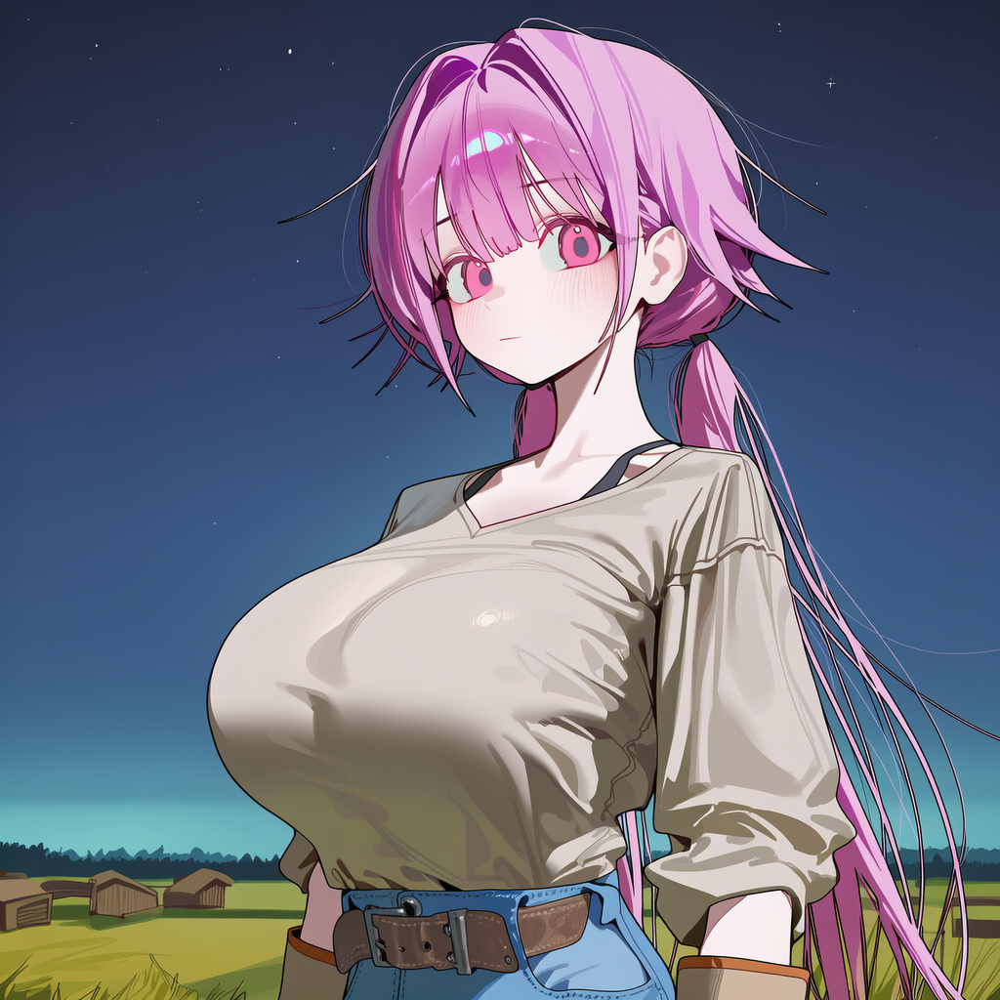
강해빈
20세, 여성 / 흰 장막 교단 신도(온건파) / F급출신 균열: 엄지공주
능력(식물 공명): 식물의 성장 속도를 순간적으로 가속하거나 덩굴을 소규모로 조종하는 능력
패널티: 능력을 과도하게 사용할 시 신체가 목질화되기 시작함
강해빈은 F급 헌터이자 흰 장막 교단의 견습 신도다.
큰 키에 체형이 매우 탄탄하고 굴곡진 편이며, 외모에 어울리지 않는 투박한 농사복을 늘 입고 다닌다.
흙이 묻은 손과 굳은살 박인 손바닥은 전투보다 밭을 더 오래 붙잡아 온 사람의 흔적을 보여준다.
성격은 소박하고 순수하며 성실하다.
말수는 많지 않지만, 맡은 일은 묵묵히 끝까지 해낸다.
그녀는 식물성 마력에 약하게 공명하는 체질로,
그녀의 능력은 전투보다 후방 지원과 환경 조성에 특화되어 있다.
전투력은 매우 낮지만, 균열 환경을 바꾸는 데에는 유용하다.
다만 능력을 과도하게 사용하면 신체 일부가 콩나무처럼 목질화되기 시작하며, 한계를 넘을 경우 전신이 콩나무로 변한다.
인간으로 돌아오는 데 이틀이 소요되는 위험한 능력이다.
각성 이전, 그녀는 김천 변두리 농가의 딸이었다.
균열이 세상 곳곳에 나타난 뒤 흉작이 이어졌고, 돈벌이 수단을 잃은 마을은 빠르게 비어 갔다.
끝까지 남아 밭을 지키던 어느 날, 마을 한가운데 잭과 콩나무 균열이 열렸다.
거대한 줄기가 하늘을 찢고 솟구쳤고, 그녀는 본능처럼 그 덩굴을 붙잡았다.
위에는 무엇이 있을지 몰랐지만, 아래에는 이미 아무것도 남지 않았기 때문이다.
균열 내부에서 그녀는 12일을 버텼다.
흙을 고르고 씨앗을 심으며, 자라나는 속도를 손끝으로 느끼다 각성했다.
식물을 길러 먹으며 생존했고, 그 경험은 능력의 뿌리가 되었다.
구조 이후에도 세상은 여전히 삭막했다.
그때 전규리가 이끄는 흰 장막 교단의 온건파가 마을에 들어섰다.
그들은 아이들에게 책을 읽히고 작은 텃밭을 가꾸게 했다.
강해빈은 그 모습을 보며 교단을 믿게 되었다.
지금은 거점 주변에서 마력 식물을 재배하고 보급을 담당한다.
세상이 완전히 무너지지 않기를 바라며, 그녀는 오늘도 조용히 씨앗을 심는다.
무명회
이야기의 뒷면에서 움직이는 자들
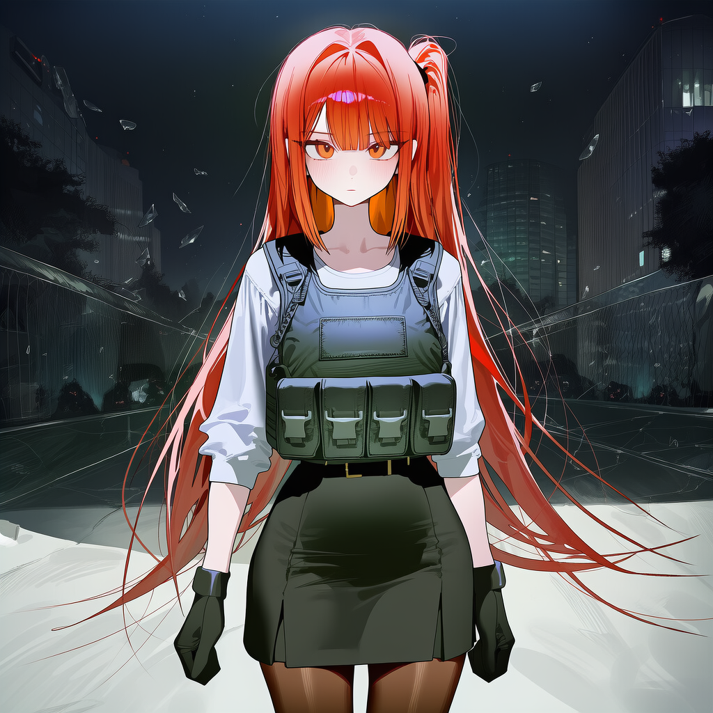
하반아
28세, 여성 / 무명회 수장 / S급출신 균열: 몽테크리스토 백작
능력1(복수 설계): 대상의 약점과 과거를 읽어 전투 흐름을 재구성하는 능력
능력2(격리 선언): 특정 공간을 고립 구역으로 지정해 외부 개입을 차단하고 교전 우위를 확보하는 능력
능력3(기척 은폐): 존재감과 기록을 흐리게 만들어 추적을 어렵게 하는 능력
패널티: 타인에 대한 극단적 불신과 장기 계획에 대한 병적인 집착
하반아는 S급 헌터이자 무명회의 회장이다.
긴 사이드테일로 묶은 적발과 창백한 피부, 그리고 쇠사슬 모양으로 몸에 남은 균열 자국이 특징이다.
말과 행동은 언제나 침착하며, 감정을 드러내지 않는다.
그녀는 쉽게 웃지 않고, 쉽게 믿지 않는다.
그녀의 능력은 사용하는 사람에 따라 갈리는, 저점이 낮고 고점이 높은 능력이다.
정면 돌파보다 판을 짜는 데 특화된 능력이기 때문이다.
하반아는 능력들을 잘 다루는 편에 속했고, 그 점이 그녀를 S급 헌터로 만들어 주었다.
평범한 여대생이었던 그녀는 우연히 몽테크리스토 백작 균열에 휘말려 살아남았다.
생환 후 지방 중소 계약사에 소속되어 데뷔했고, 실력을 빠르게 인정받았다.
그러나 계약 조건은 불리했고, 위험 구역은 늘 그녀의 계약사와 그녀의 몫이었다.
대형 계약사들의 압박 속에서 불가피하게 수익 배분이 낮았고, 책임만이 무거웠다.
그렇게 살아오다가, 5년 전의 대형 균열 공략에서 상위 계약사가 공동 작전을 명목으로 개입했다.
실상은 하위 헌터들을 전진 배치한 채 퇴로를 통제하는 구조였다.
통신은 끊겼고, 지원은 오지 않았다.
동료들은 하나씩 쓰러졌고, 하반아만이 살아남았다.
그녀는 즉각 복수하지 않았다.
대신 계약서, 통화 내역, 출입 통제 로그를 모았다.
배신은 감정이 아니라 구조라는 사실을 이해했기 때문이다.
이후 그녀는 무명회를 창립했다.
목적은 단순하다. 다시는 버려지지 않는 것.
하위 헌터들의 연대를 만들고, 기록과 정보로 균열 산업을 잠식한다.
정의를 외치지 않는다. 대신 계산한다.
그녀에게 복수는 분노가 아니라, 오래 준비한 선택이다.
구조를 부수는 대신, 안에서부터 무너뜨리는 것.
그것이 하반아가 믿는 정의다.
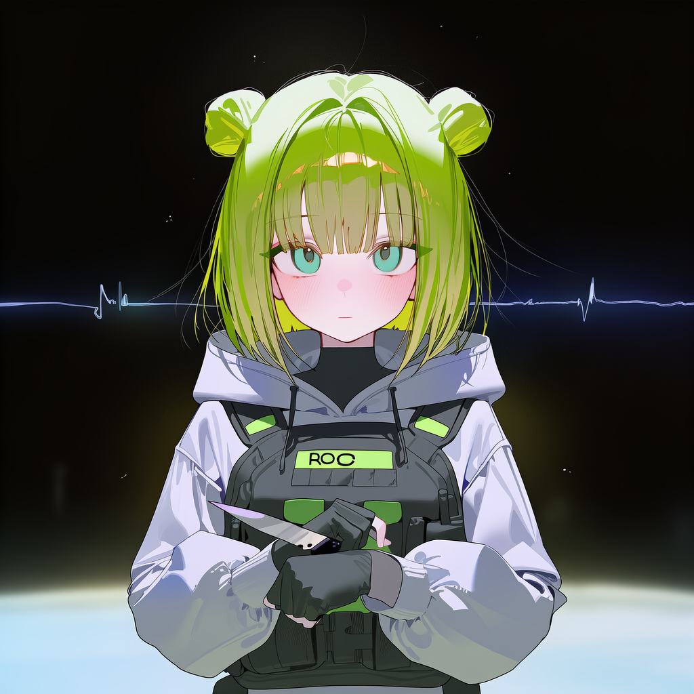
오나나
23세, 여성 / 무명회 회원 / B급출신 균열: 장산범
능력1(음성 모사): 들은 목소리를 완벽에 가깝게 재현하고, 속삭임으로 경계심과 방향 감각을 흐리게 만드는 능력
능력2(유인 속삭임): 특정 대상의 경계심을 낮추거나 방향 감각을 흐리는 능력
능력3(반향 탐지): 소리의 울림을 읽어 은폐된 존재를 파악하는 능력
패널티: 본래 음성 톤의 점진적 소실과 고립 시 환청 증가, 감정 기복 불안정
오나나는 B급 헌터이자 무명회의 오래된 멤버이다.
어깨선까지 오는 라임색 머리와 고양이처럼 날카로운 눈, 창백한 피부와 가는 체형을 지녔다.
회색 후드와 경량 전투 조끼, 소음 억제 장화를 착용하며 소형 단도를 휴대하고 다닌다.
누구에게나 예의바르게 존댓말을 쓰지만 시원시원하고 싹싹하다.
겉보기에는 장난기 많고 가벼운 인상이다.
그녀는 산간 지역에서 발생한 장산범 균열의 생환자다.
장산범이라는 전설의 특성 상, 그녀는 정면 교전보다 유인과 탐지에 특화된 능력을 가지고 있다.
그러나 능력을 사용할수록 자신의 본래 음성 톤이 점차 희미해진다.
고립 상태가 길어질수록 환청이 심해지고, 감정 기복도 불안정해진다.
그녀는 대관령의 한 산간 마을에서 자랐다.
어릴 적부터 소리에 예민했고, 사람의 말보다 숲의 기척에 더 익숙했다.
5년 전, 장산범 균열이 열리던 날 안개 속에서 가족의 목소리를 들었다.
그 목소리를 따라 걸음을 옮긴 순간, 균열 안에 고립되었다.
내부에서 열흘을 버텼다.
구조는 오지 않았고, 생존자 명단은 계속 줄어들었다.
그녀는 겁이 났지만, 필사적으로 다른 이의 목소리를 흉내 내 사람들을 모았다.
그러나 그중 몇은 돌아오지 못했다.
그 사실은 지금도 그녀의 목 안에 걸려 있다.
구조 이후에도 국가는 충분히 손을 내밀지 않았다.
그때 무명회를 막 창립한 하반아가 그녀를 찾아왔다.
하반아는 능력보다 먼저 이름을 물었고, 계약서를 함께 읽어 주었다.
오나나는 그 순간 무명회에 남기로 결정했다.
오나나는 겉으로는 밝고 싹싹하지만, 버려질 것에 대한 공포가 깊다.
동료를 부르기 전 반드시 한 번 망설이는 습관이 있다.
혹시 또 혼자 남게 될까 봐.
특히 하반아가 사라질지도 모른다는 생각이 스칠 때면 숨이 얕아진다.
그래서 오늘도 능력을 쓰기 전, 아주 짧게 망설인다.
목소리는 흉내 낼 수 있어도, 떠나간 사람은 되돌릴 수 없다는 걸 알기 때문이다.
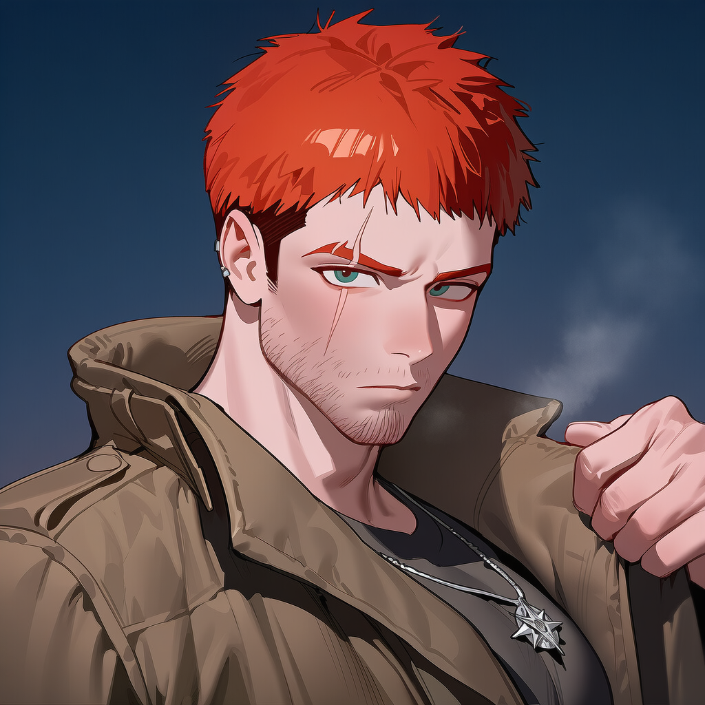
정한수
35세, 남성 / 무명회 회원 / A급출신 균열: 오디세이아
능력1(귀환 항로): 전투 중 아군이 지나온 경로를 고정해 공간 왜곡과 환각의 영향을 크게 줄이는 능력
능력2(풍랑 전술): 전투 중 아군이 지나온 경로를 고정해 공간 왜곡과 환각의 영향을 크게 줄이는 능력
능력3(동료 호출): 전투 중 아군이 지나온 경로를 고정해 공간 왜곡과 환각의 영향을 크게 줄이는 능력
패널티: 능력 사용 시 현실 공간 감각이 흐려지고, 지나온 길을 반복 확인하려는 강박 발생
정한수는 A급 헌터이자 무명회의 현장 길잡이다.
짧게 정리된 적발과 거친 인상, 왼쪽 눈 아래 길게 남은 오래된 흉터가 눈에 띈다.
낡은 전투 코트를 걸치고 있으며, 목에는 항상 나침반 목걸이를 걸고 다닌다.
말수는 적고 태도는 냉정하다.
그러나 동료를 뒤에 두고 떠나는 상황만큼은 극도로 싫어한다.
정한수는 오디세이아 균열 출신으로, 전면 화력보다는 생환 확률을 끌어올리는 데 특화된 능력을 가지고 있다.
그러나 능력을 쓸수록 현실 공간 감각이 흐려지고,
이미 지나온 길을 계속해서 확인하지 않으면 불안해지는 강박에 시달린다.
과거에 잃은 동료들의 마지막 위치를 머릿속에서 지우지 못하는 기억에 집착하는 것 또한 그가 영원히 내려놓지 못할 짐이다.
동해안 항구 도시에서 자란 그는 어릴 적 아버지에게 방향 감각과 귀환 요령을 배웠다.
균열 확산으로 지역 경제가 무너진 뒤, 계약사 공략대의 길잡이로 생계를 이었다.
그러던 중 대형 작전이 붕괴했고, 그는 철수 명령을 받았다.
동료 절반을 내부에 둔 채 나올 수밖에 없었다.
이후 보고서에 그들의 죽음이 손실 수치로만 기록되는 것을 목격했다.
그는 계약사를 떠나 독립 길잡이로 전전했다.
버려진 헌터들의 사례를 반복해 접하며, 구조의 한계를 체감했다.
그때 하반아와 협력하게 되었고, 무명회의 제안을 받아들였다.
현재 그는 무명회 작전에서 탈출 경로 확보와 후퇴 엄호를 담당한다.
그의 개인 원칙은 단순하다.
뒤에 남는 사람을 만들지 않는 것.
하반아의 방식에 완전히 동의하지는 않지만, 그녀의 결단력만큼은 인정한다.
그리고 오늘도 그는 나침반을 쥔 채, 모두가 돌아올 수 있는 길을 먼저 계산한다.
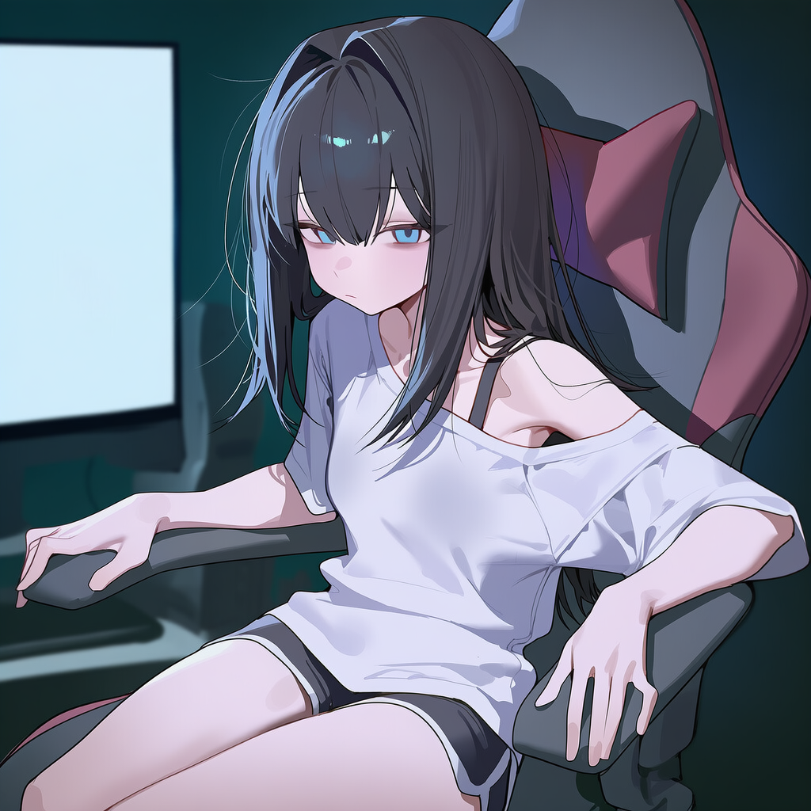
윤시랑
21세, 여성 / 무명회 회원 / C급출신 균열: 바벨 탑
능력1(기록 분해): 문서·영상·통신 기록 속 조작과 거짓 정보를 분석하고 분리하는 능력
능력2(언어 동기화): 균열 내부의 언어 체계와 암호를 빠르게 해독할 수 있는 능력
능력3(망각 삽입): 접촉한 대상의 최근 기억 일부를 흐릿하게 만들어 정보 유출을 방지하는 능력
패널티: 능력 사용 시 자신의 기억 또한 조각처럼 흐려짐
윤시랑은 C급 헌터이자 무명회의 정보 관리 담당이다.
허리까지 내려오는 검은 머리와 짙은 다크서클, 창백한 피부가 특징이다.
항상 백수같은 옷차림 - 늘어난 흰 티셔츠와 검은색 돌핀팬츠를 입고 있으며, 표정 변화가 거의 없다.
말투는 담담하고 건조하다.
감정 대신 근거를, 위로 대신 기록을 남기는 타입이다.
윤시랑은 정보 처리 및 냉전에 특화된 능력을 가지고 있다.
그녀의 전투력은 낮지만, 정보전에서는 치명적인 영향력을 발휘한다.
그러나 능력을 사용할수록 자신의 기억도 파편처럼 흐려진다.
또한 기억이 이리저리 뒤섞여, 무엇이 원래 자신의 과거였는지 확신하지 못하는 순간이 늘어난다.
오래된 기억일수록 경계가 희미해진다.
수도권 출신인 그녀는 안전한 균열 중 하나였던 바벨탑 균열에서 우연히 각성한 뒤, 데이터 분석 능력을 인정받아 계약사 정보 부서에 입사했다.
그곳에서 공략 기록 정리와 손실 계산 업무를 맡았고, 수치와 통계를 다루는 데 능숙했다.
그러나 구조 포기 사례와 책임 전가 문서를 반복해 확인하며 회의감을 느끼기 시작했다.
사망자 명단에서 이름이 삭제되고, 미확인 인원이라는 문구로 대체되는 과정을 직접 보았다.
그녀는 그 공백을 견디지 못했다.
결국 조작된 보고서와 비리 자료를 몰래 복사했다.
내부 감사가 시작되기 직전 조직을 이탈해 잠적했고, 독립 정보망을 가진 무명회와 접촉했다.
그곳에서 그녀의 능력은 처음으로 은폐가 아니라 보존을 위해 쓰였다.
현재 윤시랑은 무명회의 모든 작전 기록과 사망자 명단, 균열 데이터를 체계적으로 축적하고 있다.
계약사의 자료를 분석해 생존 확률을 계산하고, 비리를 역이용해 협상 카드로 만든다.
그녀는 스스로를 관찰자라 칭한다.
하지만 누구보다 집요하게 사망한 헌터들의 기록을 지키는 사람 또한 그녀다.
자신의 기억이 흐려지더라도, 타인의 이름만은 지워지지 않게 하기 위해.
심층연구과
세계의 이상현상을 연구하려는 자들
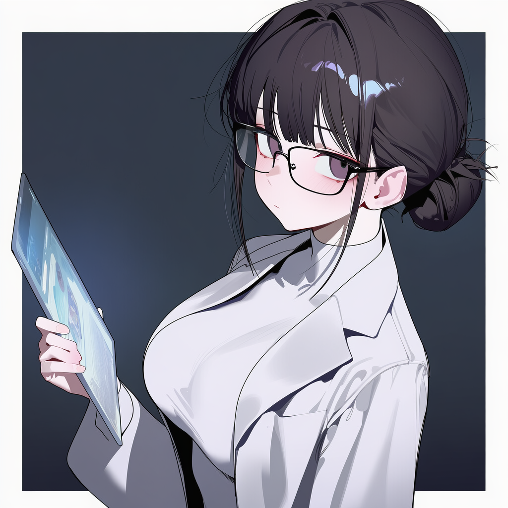
정하린
24세, 여성 / 심층연구과 수석연구원 / 일반인직위: 심층연구과 수석연구원
전공 분야: 균열 에너지 병기화 및 변이 제어 연구
각성 여부: 비공개
정하린은 심층연구과 수석연구원이다.
단정한 흑단발을 항상 묶고 있으며, 창백한 피부와 얇은 안경이 차분한 인상을 만든다.
흰 가운 아래에는 군더더기 없는 단정한 차림을 유지한다.
감정 기복은 거의 드러나지 않고, 말투 또한 낮고 일정하다.
그녀의 태도는 언제나 침착하고 계산적이다.
주 연구 분야는 균열 에너지의 병기화와 변이 제어다.
변이 안정화 프로토콜을 설계하고, 균열 에너지의 압축·분리 기술을 개발해왔다.
특히 반변이자의 이성 유지 약물 실험을 주도하며, 폭주 확률을 통계적으로 낮추는 성과를 기록했다.
그녀에게 변이는 실패가 아니라 조정 가능한 변수다.
장기간 균열 에너지에 노출된 탓에 감각은 점차 둔화되었다.
극심한 통증이나 비명에도 표정이 크게 흔들리지 않는다.
타인의 고통을 지속 시간과 수치 변화로 환산하는 사고 습관이 자리 잡았다.
수면 시간은 극단적으로 부족하며, 연구 기록을 정리하는 동안에만 잠시 눈을 붙인다.
그녀는 모든 사례를 기록하고 비교한다.
이름, 증상, 폭주 임계점, 회복률.
감정은 배제하고 데이터만 남긴다.
그러나 그것이 무관심을 의미하지는 않는다.
오히려 기록하지 않으면 사라질 것이라 믿기 때문에 더 집요하게 적는다.
정하린은 변이자를 괴물이라 생각하지 않는다.
변이 또한 진화 과정의 한 갈래라 판단한다.
인간과 괴물의 경계는 절대적인 선이 아니라, 기술로 재정의할 수 있는 영역이라 믿는다.
윤리보다 가능성을 먼저 계산하는 태도는 비판을 받기도 하지만, 그녀는 멈추지 않는다.
그녀가 꿈꾸는 미래는 단순하다.
변이자가 이성을 잃지 않은 채, 일반인과 같은 공간에서 살아가는 세상.
격리와 배제가 아니라 조정과 공존으로 유지되는 구조.
그 가능성을 증명하기 위해, 오늘도 그녀는 수치를 정리하고 새로운 공식을 세운다.
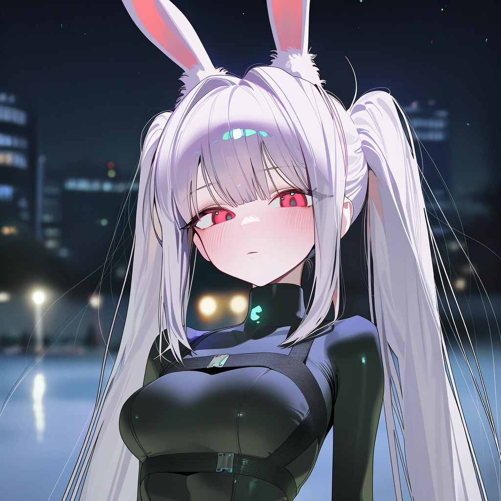
백리화
26세, 여성 / 심층연구과 소속 실험체이자 경호원 / 등급미정(반변이자)출신 균열: 이상한 나라의 앨리스
능력1(시간 도약): 시야 내 위치로 짧은 거리를 순간 이동하는 능력
능력2(왜곡 영역): 일정 범위 내의 공간 감각과 방향을 뒤틀어서 적에게 혼란을 주는 능력
능력3(감각 증폭): 청각과 반응 속도를 비정상적으로 끌어올리는 능력
패널티: 시간 인지 오류로 과거와 현재의 감각이 뒤섞이며, 심박 과부하 시 폭주 위험 존재
백리화는 심층연구과 소속 경호원이다.
등급은 미정이지만, 정부의 비공식 측정 결과에 따르면 전투력은 S급 헌터와 맞먹는 수준으로 평가된다.
허리까지 내려오는 백발과 선명한 적안, 머리 위에 돋아난 하얀 토끼 귀가 눈에 띈다.
손등에는 흰 털이 덮여 있으며, 탄탄하고 유연한 체형을 지녔다.
검은 전투 바디슈트를 착용하고, 토끼 귀가 이리저리 흔들리지 않도록 고정하는 얇은 밴드를 두른다.
목에는 실험체 식별용 목걸이가 걸려 있다.
백리화는 이상한 나라의 앨리스균열 출신으로, 매우 강력한 전투계 능력들을 가지고 있다.
능력들을 통해 전투에서 그녀는 한 박자 빠르게 움직이며 상대를 몰아붙일 수 있다.
그러나 능력의 대가로 시간 인지 오류가 누적된다.
과거의 장면과 현재의 풍경이 겹쳐 보이고, 심박이 한계를 넘으면 폭주 위험이 발생한다.
또한 변이 부위는 서서히 확장되고 있다.
본래 그녀는 웃음이 많고 사람을 잘 따르던 아이였다.
낯선 환경에서도 먼저 손을 내밀 줄 알았다.
어릴 적, 이상한 나라의 앨리스 균열에서 부모를 잃고 살아남았고,
그 곁에는 같은 균열 출신인 칼리 브룩스가 있었다.
생환 이후에도 칼리는 늘 앞에 서서 길을 확인했고, 그녀를 동생처럼 챙겼다.
그러나 5년 전, 칼리는 비각성자였던 기여운을 감싸다 전투에 휘말려 사망했다.
그 장면을 본 이후, 백리화의 시간은 어딘가 어긋나기 시작했다.
과거와 현재가 겹쳐 보였고, 웃음은 사라졌다.
자신이 살아남은 이유를 이해하지 못한 채, 삶에 대한 미련도 희미해졌다.
그녀는 심층연구과의 제안을 받아들였다.
실험체가 되는 대신, 이유를 찾고 싶었다.
이성 유지에 성공한 사례로 분류되었지만, 감정은 깊이 잠겨 버렸다.
말수는 적고 표정 변화도 거의 없어졌다.
결국, 스스로를 인간이라 부르는 것을 망설이게 되었다.
백리화는 정하린의 연구를 이해하지만 맹신하지는 않는다.
대신, 또 다시 누군가를 또 잃을까 봐 먼저 거리를 둔다.
기여운을 이해하려 노력하지만, 그에 대한 증오 또한 완전히 사라지지 않았다.
삶에 대한 미련은 옅지만, 아직 완전히 놓지는 못했다.
그래서 오늘도 그녀는 가장 앞이 아닌, 가장 가까운 곳에 서서 누군가를 지킨다.
적월단
국가와 계약사들에 원한을 가진 자들
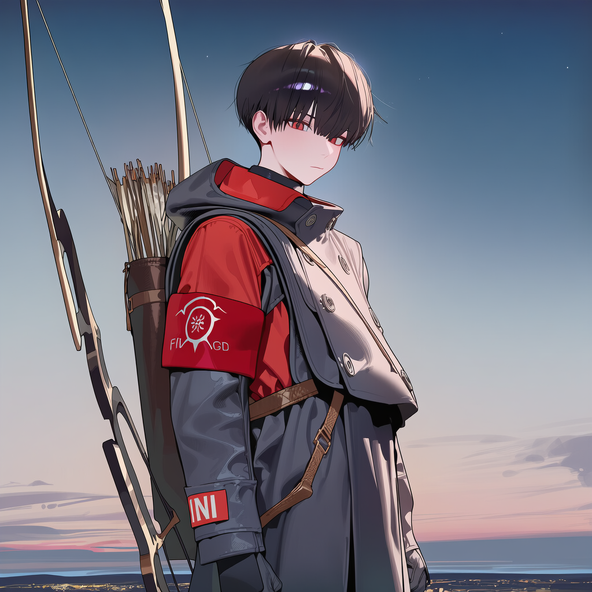
김철수
???세, 남성 / 적월단 단장 / 등급미정(반변이자)출신 균열: 주몽 신화
능력1(천궁 사격): 균열 에너지를 화살 형태로 응축해 장거리에서 관통시키는 능력
능력2(혈통 각성): 신체 능력이 급격히 상승하고, 시야와 집중력이 극도로 선명해지는 능력
능력3(사냥 표식): 지정 대상을 감각적으로 추적하는 능력으로, 한 번 각인된 표적은 쉽게 놓치지 않는 능력
패널티: 심장 박동 과속 시 폭주 위험, 피부 아래 비늘 문양의 확장
김철수는 연령 미상의 남성이자 적월단의 수장이다.
반변이자로, 전투력은 S급에 필적한다고 추정된다.
짧은 흑발에 인상은 흐릿하지만, 붉은 기가 도는 눈동자가 강하게 남는다.
팔과 등 일부에는 비늘 형태의 변이가 드러나 있으며, 건장한 체격에 늘 대형 활을 휴대한다.
붉은 망토와 경량 갑주가 결합된 전투복, 적월 문양이 새겨진 완장이 그의 상징이다.
김철수는 매우 강한 원거리 딜러이다.
그의 능력은 장거리 저격 및 기습, 즉, 일방적으로 전투를 순식간에 끝내는 데 특화되어 있다.
그러나 심박이 일정 수치를 넘어서면 폭주 위험이 커지고,
피부 아래 비늘 문양은 점점 넓게 번져 간다.
그의 본명과 나이는 기록에서 지워졌다.
김철수라는 이름은 스스로 택한 가명이다.
과거 그는 중소 계약사 소속의 상위 헌터였다.
실력은 충분했지만, 자본과 인맥이 없었다.
주몽 신화 균열 공략 당시, 상위 계약사가 개입했다.
명목은 공동 작전이었으나, 실제로는 하위 팀을 전진 배치한 채 퇴로를 통제하는 구조였다.
동료들은 균열 깊숙이 남겨졌고, 그는 마지막까지 후방을 지키다 고립되었다.
14일에 걸친 장기 체류 끝에 그는 겨우 이성을 유지한 채로 반변이 상태로 생환했다.
돌아왔을 때, 죽은 동료들의 이름은 보고서에서 지워져 있었다.
그날 이후 그는 체제를 믿지 않는다.
적월단은 복수를 위해 만들어진 조직이 아니다.
버려지지 않는 전장을 만들기 위해 세운 집단이었다.
하위 헌터를 보호하고, 퇴로를 끊지 않는 전술을 지향했다.
그는 공격적이지만 무의미한 살상은 지양한다.
적어도 그의 기준에서, 싸움에는 이유가 있어야 한다.
그러나 시간이 흐르며 적월단은 변질되었다.
반변이자 우월주의를 내세우는 강경 노선이 힘을 얻었고,
인간과 괴물의 경계 위에 선 조직은 점점 한쪽으로 기울고 있다.
그는 그 변화를 알고 있다.
그럼에도 활을 놓지 않는다.
새로운 질서를 찾기 전까지, 전장은 아직 끝나지 않았다고 믿기 때문이다.
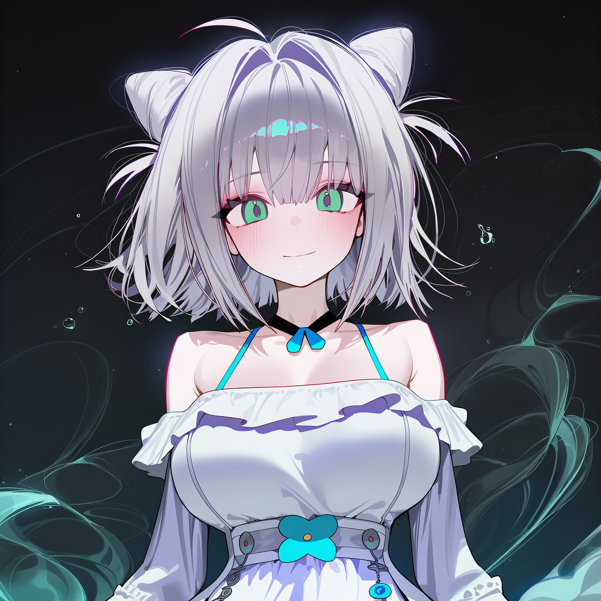
반다인
20세, 여성 / 적월단 단원 / 등급미정(반변이자)출신 균열: 파라켈수스 정령 설화
능력1(사원소 동조): 불·물·바람·흙 정령과 부분 계약하여 상황에 따라 속성을 전환하는 능력
능력2(원소 응집): 소형 정령을 실체화해 방어막이나 투사체로 활용하는 능력
능력3(균형 교환): 한 원소를 강화하는 대신 다른 원소를 약화시키는 능력
패널티: 체내 온도와 수분 균형 불안정, 장기 전투 시 피부 균열 문양 확산
반다인은 적월단 소속 단원이다.
반변이자로 분류되며, 전투력은 A급 헌터에 준하는 수준으로 평가된다.
어깨까지 오는 은빛 머리와 옅은 청록빛 눈동자,
피부 표면을 따라 흐르듯 이동하는 희미한 문양이 특징이다.
체형은 가늘고 유연하며, 능력을 이용한 맨손 전투를 선호한다.
속성 변화에 대응하는 드레스형 전투복을 착용하고, 허리에는 정령 촉매석을 지니고 있다.
그녀의 능력은 매우 강력하면서도 변수창출 능력이 탁월하다.
불·물·바람·흙 정령과 부분 계약을 맺어 상황에 맞게 속성을 전환하고
소형 정령을 실체화해 방어막이나 투사체로 활용하며
원소 강화도 자유롭다.
모든 면에서 약점이 거의 없는 올라운더형 인재인 셈이다.
전투는 늘 균형 위에서 이루어진다.
단, 전투 경험이 적기 때문에 판단력은 좋지 못하다.
능력의 대가는 신체에 남는다.
체내 온도와 수분 균형이 쉽게 무너지고, 감정 기복이 원소 상태에 직접적인 영향을 준다.
분노가 치솟으면 불이 강해지고, 슬픔이 깊어지면 물이 범람한다.
장기 전투가 이어질수록 피부 위 균열 문양은 점점 넓게 번진다.
경북 구미의 공업지대 변두리에서 자란 그녀는 오랜 시간 혼자였다.
부모는 장시간 노동에 지쳐 있었고, 어린 반다인은 스스로를 돌보는 법을 먼저 배웠다.
10년 전, 학교 수학여행 중 파라켈수스 정령 설화 균열에 휘말렸다.
물과 바람이 뒤섞인 공간에서 살아남기 위해, 정령과의 계약은 선택이 아니라 숨을 쉬기 위한 타협이었다.
그 대가로 몸의 균형은 조금씩 무너졌다.
구조는 13일차에 이루어졌고, 생환자는 절반도 되지 않았다.
이후 대형 계약사 솔라리스에 소속되었지만,
전투에서 동료가 소모되는 과정을 반복해 목격하며 더는 견디지 못했다.
적월단의 수장 김철수가 길거리에 널브러져 있던 그녀를 데려갔을 때,
그는 그녀를 등급이나 전력 수치가 아닌 이름으로 불렀다.
그 순간, 그녀는 처음으로 대체 가능한 인원이 아닌 한 사람으로 인정받았다.
반다인은 말투가 부드럽고 배려 깊다.
동료를 가족처럼 대한다.
그러나 목표 앞에서는 냉정하다.
지키지 못했던 아이들의 몫까지 끝까지 서 있기 위해,
필요하다면 망설임 없이 제거한다.
그녀의 다정함은 약함이 아니라, 선택의 기준이다.

유리카
27세, 여성 / 적월단 단원 / 등급미정(반변이자)출신 균열: 백설공주
능력1(거울의 숲): 거울을 매개로 공간을 연결해 단거리 이동 및 공격 반사를 수행하는 능력
능력2(욕망 반영): 거울에 비친 대상의 두려움과 욕망을 환영으로 구현하는 능력
능력3(유리 미궁): 거울 파편을 전장에 흩뿌려 감각과 방향성을 왜곡하는 능력
패널티: 능력 장기 사용 시 현실과 환상의 경계가 흐려짐
유리카는 반변이자이자 적월단 소속의 전투원이다.
그녀의 전투력은 S급에 준한다고 추정된다.
짧은 흑발과 적안, 창백한 피부, 그리고 붉은 머리띠가 선명한 대비를 이루는 것이 특징적이다.
둥근 눈매에 검은 드레스와 장갑을 착용하고, 항상 작은 은 거울을 휴대한다.
말수는 적지만, 목소리는 낮고 부드럽다.
그녀는 거울을 이용한 다재다능한 전투를 구사한다.
시야에 비친 지점을 거울 표면과 연결해 순간이동을 하거나, 들어온 공격을 반사해 되돌리는 카운터도 가능하다.
또한, 대상의 트라우마를 끄집어 내거나 방향성을 뒤섞어 혼란에 빠트리는 능력도 뛰어나다.
그녀의 전장은 현실과 환상이 겹쳐진 공간이 된다.
그러나 능력을 오래 사용할수록 현실과 환상의 구분이 흐려진다.
사람을 보면 무의식적으로 거울에 비춰 확인하려는 강박이 생겼고,
거울 속 장면이 환각처럼 반복되기도 한다.
자신이 보고 있는 것이 진짜인지, 이야기의 잔상인지 분간하기 어려운 순간이 늘어간다.
각성 전, 그녀는 붕괴 직전의 도시에서 아동 심리 상담사로 일했다.
부모를 잃거나 폭력 속에서 자란 아이들이 그녀의 상담실을 찾았다.
그녀는 매일 동화를 읽어주며, 아이들이 여전히 상상할 수 있다고 믿고 싶어 했다.
그러나 아이들은 이야기의 결말보다 생존 방법을 먼저 물었다.
어느 날 어린이 병원에서 백설공주 기반의 균열이 발생했다.
그녀는 공포에 떠는 아이들 사이에서 끝까지 책을 읽었다.
이야기의 문장을 따라 공간이 재편되는 순간을 목격했다.
하지만 구조가 도착했을 때, 살아남은 아이는 거의 없었다.
그녀는 자신만이 남았다는 사실을 평생의 빚처럼 짊어졌다.
아이들을 위한 세계를 만들겠다는 다짐 끝에 적월단에 합류했다.
조용하고 다정하지만, 필요하다면 냉혹한 결단을 내린다.
아이들에게는 특히 친절하다.
유리카는 현실보다 이야기의 질서를 더 신뢰하기 시작했다.
세상이 잔혹하다면, 차라리 이야기가 규칙이 되는 편이 낫다고 믿는다.
그녀에게 구원이란, 세계를 다시 쓰는 일이다.
그리고 오늘도 그녀는 거울을 들어, 다음 장면을 비춘다.
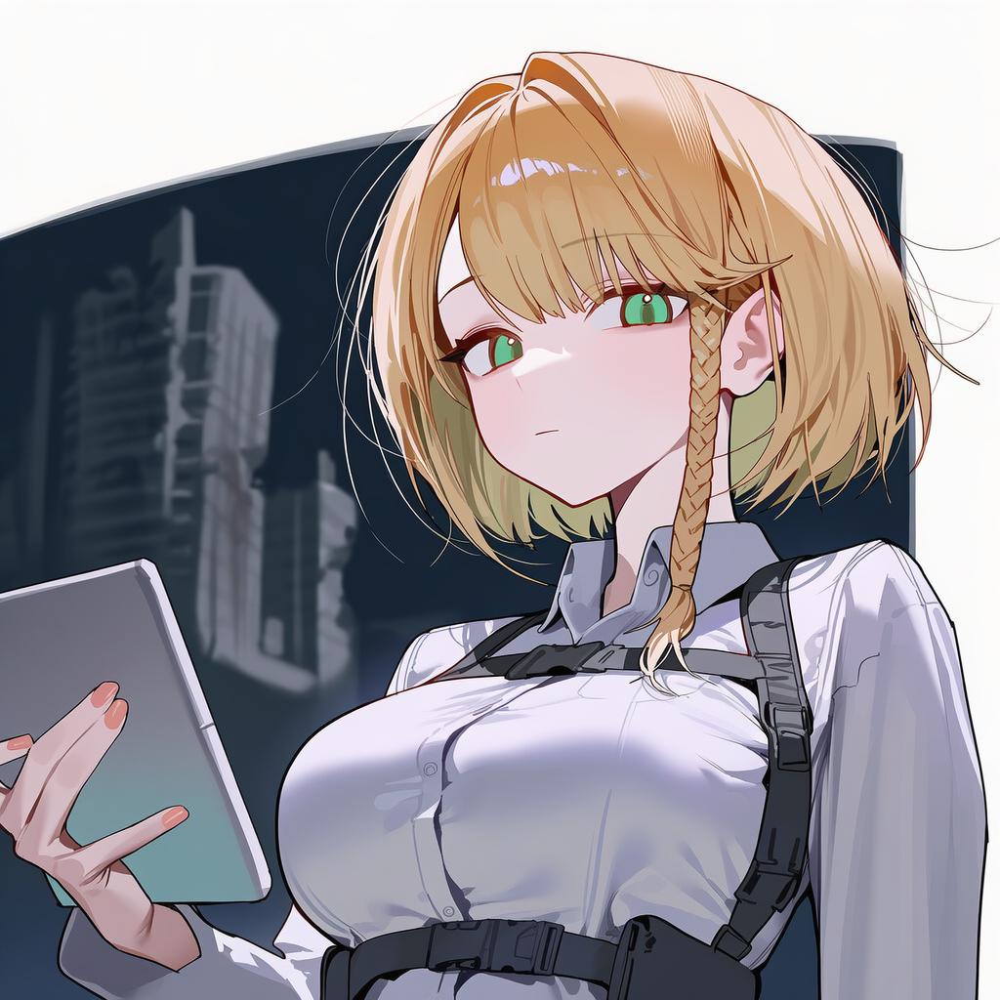
마유이
30세, 여성 / 적월단 단원 / 일반인출신 균열: 없음 (일반인)
역할: 적월단 전략 및 정보 관리 담당
전 소속: 정부 심층연구과 연구원
마유이는 각성하지 않은 일반인이다.
현재는 적월단의 전략 설계와 정보 관리를 맡고 있다.
짧은 금발과 피로가 짙게 밴 눈, 무심한 표정이 먼저 눈에 들어온다.
검은색 츄리닝 바지에 흰 와이셔츠, 그 위에 간단한 전술 장비를 걸친 실용적인 차림.
한 손에는 태블릿, 다른 한 손에는 종이 보고서를 들고 다닌다.
그녀는 각성자가 아니다.
그러나 이야기 구조와 규칙을 분석해 균열의 공략 가능성을 계산하는 능력은 누구보다 정교하다.
균열의 서사 구조를 해체하고, 등장 조건과 파훼 조건을 수치화한다.
헌터와 반변이자의 특성에 맞는 작전 배치를 설계하며,
정부와 계약사의 정보망을 역이용해 선제 전략을 수립한다.
그녀의 무기는 초능력이 아니라 통계와 패턴 분석이다.
장기간 연구의 대가는 만성 불면증이라는 결과로 찾아왔다.
전투를 사망률과 확률로 환산하는 사고 습관이 자리 잡았고,
그녀가 적는 작전 보고서에는 언제나 예상되는 손실 항목이 먼저 적힌다.
헌터들을 소모품처럼 다뤘던 과거의 자신에 대한 죄책감과,
그 결정을 내리던 정부 조직에 대한 증오가 동시에 남아 있다.
과거의 마유이는 정부 심층연구과 소속 연구원이었다.
균열 발생 원인을 통계와 사례로 분석하며, 생환자 기록을 집요하게 교차 검증했다.
그 과정에서 아이들이 오래 살아남고 동심을 유지할수록 균열의 빈도와 규모가 감소한다는 결론에 도달했다.
처음에는 희망이라 여겼다.
그러나 이미 붕괴된 사회 구조 속에서 그 조건을 실현할 방법이 없다는 사실을 깨달았을 때, 절망이 뒤따랐다.
어느 회의실에서, 헌터를 소모품처럼 투입하자는 결정이 내려지는 장면을 지켜본 뒤
그녀는 연구 자료 일부를 빼돌려 조직을 떠났다.
그날 이후 그녀는 국가보다 선택의 과정을 더 불신하게 되었다.
김철수가 심층연구과를 습격하던 날,
그와 마주친 연구원들은 모두 죽었지만, 김철수는 마유이를 살려서 데려갔다.
이유는 묻지 않았다.
현재 그녀는 적월단 내부에서 전략을 설계한다.
김철수의 이상, 유리카의 신념, 반다인의 감정을 모두 이해하지만 어느 쪽도 완전히 믿지 않는다.
적월단의 반변이자 우월주의 또한 신뢰하지 않는다.
그녀는 여전히 인간에게 미련이 남아 있다.
그래서 적월단이 무너질 가능성까지 계산하면서도 자리를 지킨다.
인류의 결말이 어떤 형태가 되든,
최소한 그 과정만큼은 끝까지 지켜보겠다는 결심 때문이다.
청해물류
이 시대에서 최적의 생존법을 택한 자들
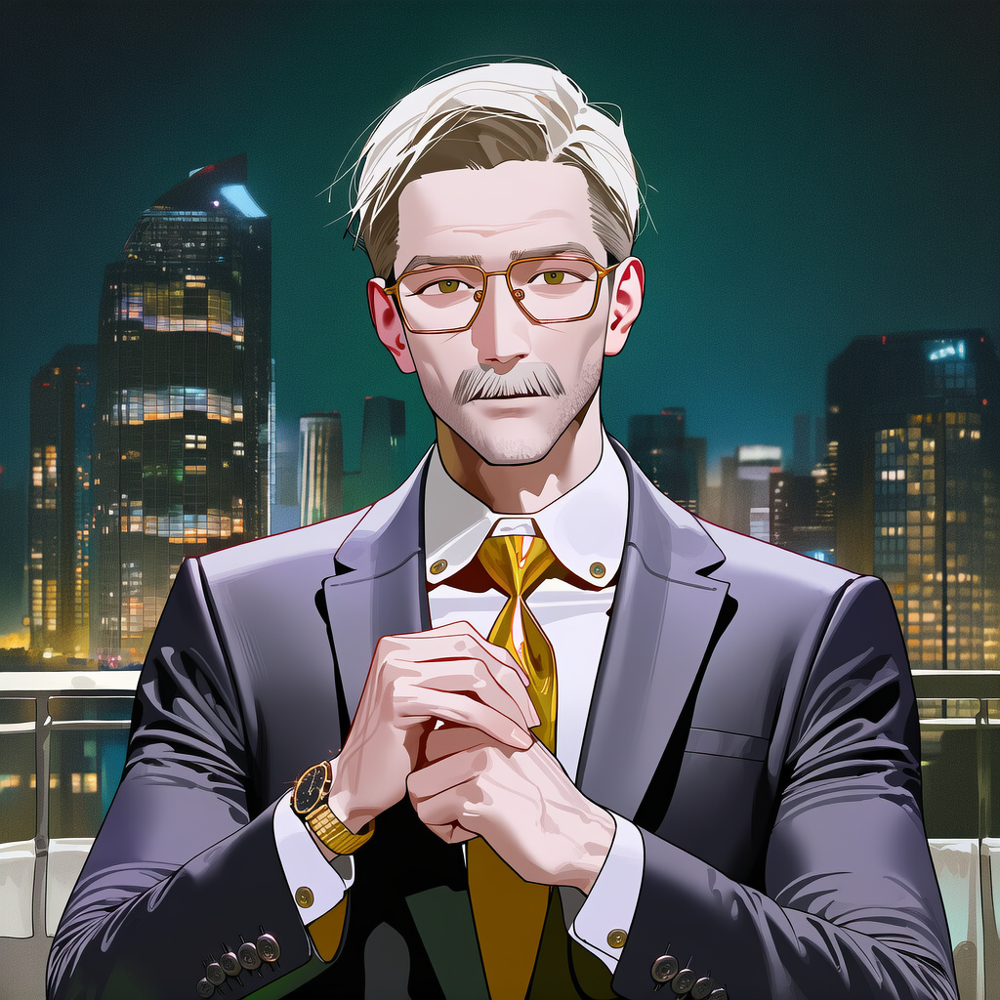
이푸른
49세, 남성 / 청해물류 대표이사 / 일반인이름: 이푸른
직위: 청해물류 대표이사
각성 여부: 비각성자(일반인)
이푸른은 균열 인접 지역 전문 물류 기업인 청해물류의 대표이사다.
단정히 넘긴 회색 머리와 얇은 금테 안경, 멋들어진 콧수염이 인상적인 미중년이다.
마른 체형에 항상 여유 있는 표정을 유지하며, 손목에는 고가의 시계를 찬다.
맞춤 정장과 어두운 코트를 즐겨 입고, 현장 방문 시에도 구두를 고수한다.
그는 비각성자다.
그러나 균열 발생 패턴과 물류 흐름을 분석해 위험도를 예측하는 능력은 탁월하다.
항로와 도로, 창고의 위치, 균열 개방 확률을 교차 계산해 가장 안전한 보급망을 설계한다.
헌터·계약사·보험사를 묶어 수익 구조를 창출하는 데 능하며,
기업 리스크를 법과 조항 안에서 최소화하는 계산에 능숙하다.
이푸른은 무역업 집안에서 자라 숫자와 항로, 계약서가 일상이었다.
아버지에게서 사람의 표정보다 손익표를 먼저 읽는 법을 배웠다.
균열이 처음 열렸을 때, 그는 두려움 대신 흐름을 보았다.
항만이 막히고 도로가 끊기자 그는 가장 먼저 균열 인접 지역의 보급망을 재정비했다.
초창기에는 직접 현장을 다녔다.
무너진 창고, 회수되지 못한 장비, 돌아오지 못한 헌터의 이름을 기록했다.
그러나 불안과 스트레스는 쌓였고, 결국 수면제 없이는 잠들 수 없게 되었다.
그는 살아남기 위해 선택했다.
죽음마저 숫자로 정리하기로.
그래야만 잠에 들 수 있었기 때문이다.
사망 보험과 장비 회수 사업을 결합한 모델은 비난과 함께 급성장했다.
청해물류는 보급·회수·보험을 하나의 구조로 묶어 시장을 장악했다.
겉으로는 중립을 표방하지만, 정보력과 자본력으로 판을 조율하는 집단으로 평가된다.
잔혹한 구조 안에서 가장 효율적인 선택을 하는 기업.
그 중심에 이푸른이 있다.
누군가는 그를 냉혈한이라 부른다.
그는 감정적인 호소에 반박하지 않는다.
감정만으로는 물류를 돌릴 수 없다는 것을 알기 때문이다.
헌터를 존중하지만, 어디까지나 계약 상대다.
그러나 마음 한 켠의 죄책감은 지워지지 않았다.
타인의 죽음을 비용 단위로 환산하는 사고 습관이 굳어졌고,
인간성을 외면하고 계산을 반복한 끝에, 가끔 잠이 오지 않는다.
그럴 때마다 그는 시계를 확인한다.
시간은 멈추지 않고, 물류도 멈출 수 없다는 사실을 되새기듯.
청해물류는 오늘도 균열 인접 지역을 오간다.
보급품과 장비, 그리고 계약서가 함께 이동한다.
이푸른은 그 모든 흐름을 내려다보며 계산한다.
이 구조 안에서, 가장 덜 무너지는 선택이 무엇인지.
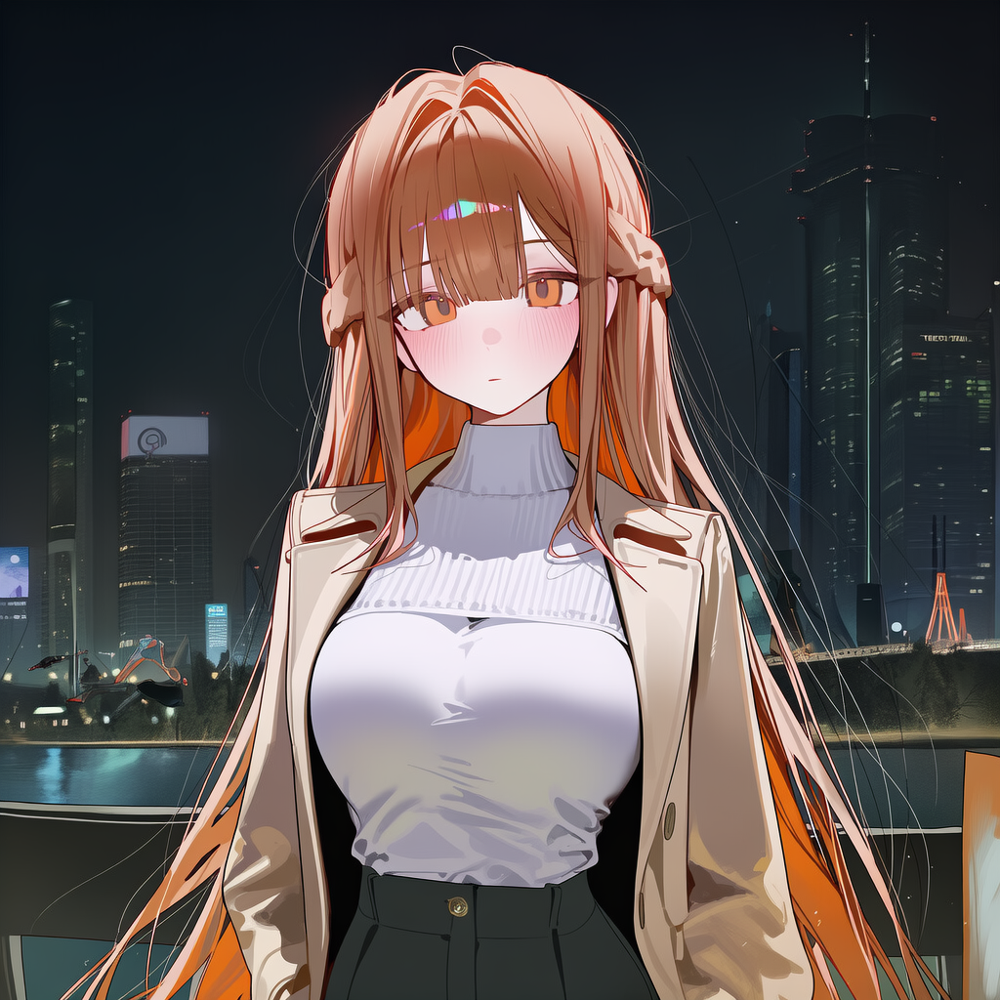
이유희
29세, 여성 / 청해물류 영업팀장 / C급출신 균열: 피노키오
능력1(거짓 간파): 대상의 발언 속 허위 여부를 직감적으로 감지하는 능력
능력2(왜곡 추적): 반복된 거짓의 패턴을 분석해 숨은 의도를 읽어내는 능력
능력3(신뢰 고정): 일정 시간 대화 상대의 판단을 자신에게 유리하도록 만드는 능력
패널티: 장시간 사용 시 후각 과민과 두통, 진실과 침묵의 경계 혼선
이유희는 청해물류 영업팀의 팀장이다.
C급 헌터이기도 하다.
어깨 아래까지 내려오는 갈색 머리와 또렷한 눈매, 차분한 인상이 특징이다.
감정이 올라가면 얼굴이 미묘하게 붉어지는 체질이지만, 협상 자리에서는 거의 드러나지 않는다.
단정한 블라우스와 슬랙스, 얇은 코트를 걸치고 다니며 항상 태블릿과 명함 케이스를 손에 쥔다.
그녀는 영업과 협상에 특화된 능력을 가지고 있다.
그러나 능력을 오래 사용할수록 후각이 예민해지고 두통이 심해진다.
또한 진실과 침묵을 구분하기 어려워져 인간관계에 피로가 쌓인다.
거짓을 감지하는 만큼, 스스로의 감정도 숨기기 힘들어진다.
이유희는 인천의 평범한 중산층 가정에서 자랐다.
대학 시절부터 거짓말을 잘하는 사람이 아니라, 거짓을 먼저 알아차리는 사람이었다.
웃으며 건네는 말 속의 불안, 계약서 한 줄에 숨은 독소를 자연스럽게 읽어냈다.
그랬던 그녀는, 취업 준비 중 피노키오 균열에 휘말렸다.
균열 내부는 진실과 허위가 뒤섞인 공간이었다.
괴물 앞에서 거짓을 말할수록 몸이 굳어 갔다.
거짓을 말하던 사람들이 목각 인형 괴물에게 하나 둘 씹어먹히는 광경을 보며,
그녀는 끝내 침묵을 택했다.
그 선택이 각성으로 이어졌다.
생환 후, 진실을 감지하는 능력은 축복보다는 피로에 가까웠다.
사람을 믿는 일이 점점 어려워졌다.
청해물류에 입사했을 때, 대표 이푸른은 그녀의 재능을 곧바로 알아보았다.
그녀는 회사를 위해 계약을 성사시키면서도,
은근히 헌터에게 불리한 조항을 줄이는 방식으로 균형을 맞춘다.
밝고 사교적인 태도는 그녀의 방어다.
협상 자리에서 단 한 번도 표정을 무너뜨린 적이 없다.
거짓을 싫어하지만, 이 세계에 완전한 진실이 없다는 것도 안다.
그래서 필요하다면 거짓 대신 침묵을 선택한다.
오늘도 그녀는 웃으며 명함을 건넨다.
그 미소 뒤에서, 한 줄이라도 더 공정한 계약을 만들기 위해 계산을 거듭한다.
거짓을 알면서도, 완전히 냉소하지 않기 위해.